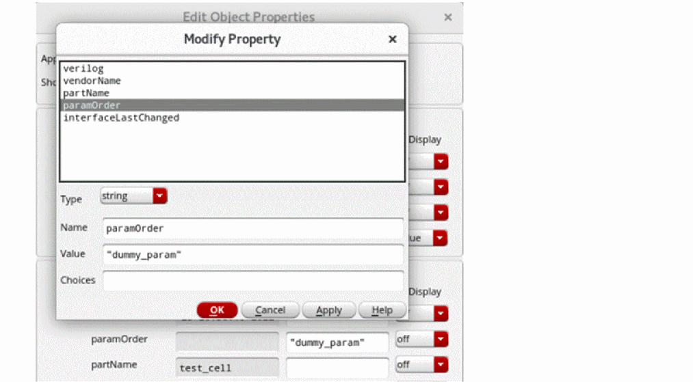
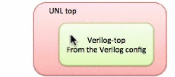

15
Working with AMS Simulator
ADE Explorer and ADE Assembler provide seamless integration of the Spectre AMS Designer and Xcelium Mixed-Signal simulator. The integration of the Spectre AMS Designer simulator with ADE Explorer or ADE Assembler creates a design environment with the look and feel expected by the analog and mixed-signal designers who already use these tools. When using this integration, you can access designs using the same tools you currently use for pure analog and mixed-signal designs.
You can use the Virtuoso® Hierarchy Editor to specify the cellviews that you want to use in your design. A configuration (config) is a set of binding rules that defines which cellviews are part of the design for a given purpose (such as netlisting and simulation). Using the Virtuoso Hierarchy Editor, you can view the hierarchy of these cellviews and apply view switching to mix and match abstraction levels depending upon which phase of the design cycle you are performing.
To simulate your design with AMS Designer in ADE Explorer or ADE Assembler, you must specify a top-level config cellview for your design hierarchy. The design can contain other config cellviews at lower levels in the hierarchy. See Creating a Configuration Cellview for information on how to create a config view
TESTBENCH_TOPCELL to access the top cell name of a testbench and to backannotate the SDF delays. This variable is automatically saved in the runSimulation script generated by AMS Designer.
The top cell name is written into the TESTBENCH_TOPCELL variable through the runSimulation script as follows.
export TESTBENCH_TOPCELL="test_sim"
xrun -f xrunArgs
The following xrun option is specified with a file that uses this variable. On running a simulation, it backannotates the SDF delays and writes them to the log file sdf.log.
-sdf_cmd_file c_sdf
cat c_sdf
COMPILED_SDF_FILE = "${CDIR}/top_cell.sdf.X",
SCOPE = "${TESTBENCH_TOPCELL}.I0",
LOG_FILE = "sdf.log"
This chapter covers the following topics:
- Creating a Configuration Cellview
- ADE Explorer and AMS Integration
- Setting up AMS Options
- About the AMS Unified Netlister
- Setting Up the AMS Netlister Options
- Using the runams Command
- Viewing the Output Log for AMS
- Viewing the Error Explanation for AMS
- Using the SimVision Debugger
Creating a Configuration Cellview
A configuration (or config) is a view of the cell (or cellview). You can have different config cellviews for different purposes.
To simulate your design in the AMS Designer Virtuoso ADE Explorer environment, you must have a top-level config cellview. The top-level config cellview can be a HDL text module or a schematic. The top-level config can contain other config cellviews lower in the hierarchy.
Configurations let you bind to different cellviews as your design evolves from concept to finish. For example, you might begin the design process using high-level behavioral models of your design components; later, you might insert modules into test fixtures; you might replace behavioral descriptions with schematics and finally, add post-layout views, as the design process approaches implementation.
You can create configuration rules that define what views to include in the hierarchy at three different levels:
You can use the Virtuoso® Hierarchy Editor to create a configuration (config) cellview as follows:
- Choose File — New Config to view the New Configuration form.
-
On the New Configuration form, click Use Template.
The Use Template form appears. -
Select AMS from the Name drop-down list.
The resulting view list is:
verilogams veriloga behavioral functional schematic symbol -
Click OK.
All design instances and their cell bindings appear in the Virtuoso Hierarchy Editor window. - (Optional) In the Global Bindings group box, you can type directly in the fields to edit the lists as required. For example, VHDL users might want to add a wildcard asterisk to View List.
- Choose View - Update to check and save the new configuration.
Setting Up the Default Simulator for a Configuration
By default, a configuration uses the default simulator which is set using the variable asimenv.startup simulator.
To use a specific simulator for a particular configuration,
-
Set the variable hed.ade setAmsSimulator to
nil. -
Define a constant named
simulatorthrough the Edit Constants form in Virtuoso Hierarchy Editor. -
Specify a simulator name as the constant value.
For example, setting the valuespectrefor the constantsimulator, will set Spectre as the default simulator for the config view.
Here, the value of thesimulatorconstant will override the default simulator, set usingasimenv.startupsimulator. If the simulator constant is invalid, an error message is displayed in the CIW and the default simulator, Spectre, is used.
For more information about adding constants, see Using Constants.
Setting Up a Config Cellview Using Virtuoso Schematic Editor or Virtuoso Text Editor
While working on a schematic cellview or a text cellview, you can set up a corresponding config cellview directly from Virtuoso Schematic Editor (VSE) or Virtuoso Text Editor.
To view the Configuration menu in VSE and Text Editor,
The Configuration menu includes the following options:
-
Auto Create Configuration—Creates a new config cellview automatically. By default, the name of this new config cellview is
auto_config. However, you can specify a different name for this cellview using the autoConfigNameForConfigCreation environment variable.If you try to create a new cellview automatically when the cellviewauto_configalready exists, it creates a new cellviewauto_config_0. Theseauto_configcellviews are created incrementally. The added cellviews can be seen in the View column of Library Manager. -
Setup Configuration–Sets up a config cellview. When you select this option, the Setup Configuration form appears as shown in the figure below:In this form, you can create a new config cellview and specify global bindings options for this new cellview. If the config cellview already exists, you can use this form to modify these options.
Specify the following form fields to set up a config cellview. Depending upon whether a config cellview already exists or not, perform the following steps:-
In the Available Configurations drop-down list, select a config cellview.
-
If a config cellview does not exist, the Available Configurations field still displays a config cellview name,
auto_config, and a new config with this name is created when you click OK. - If a config cellview exists and you want to create a new config cellview using the settings from the existing cellview, select the Automatically generate new configuration name check box. The config cellview is created with the specified name when you click OK.
- If a config cellview exists and you do not select the Automatically generate new configuration name check box, the selected config cellview is modified when you click OK.
-
If a config cellview does not exist, the Available Configurations field still displays a config cellview name,
- The Top Cell section displays the name of the library, cell, and cellview used as the top cellview of your design.
- The Configuration section displays the name of the library and cell in which the selected config cellview is to be placed, along with the name of the config cellview
-
In the Global Bindings section, specify the following options:
- Library List – Specify the libraries for cells that do not have fixed library bindings. List the libraries in the order you want them to be searched.
-
View List – Specify the views you want to open/display (something is missing here) in your configuration. The view list applies to every level of the configuration and determines which view is selected for each object in the design, unless overridden by a cell or instance binding. You can use the asterisk character (
*) as a wildcard in the View List field. The default view list is determined by the value of the viewListForConfigCreationenvironment variable. -
Stop List – Specify a list of views that are to be treated as leaf nodes, that is, not to be expanded. This field is optional. The default stop list is determined by the value of the stopListForConfigCreationenvironment variable.You can use constants in the View List and Stop List fields. A constant is a symbolic name used to represent a set of views. For information about creating and using constants, see Using Constants in the Virtuoso Hierarchy Editor User Guide.
- Constraint List – Specifies a list of constraint views that apply to the design. This field is optional. The default constraint list is determined by the value of the constraintListForConfigCreation environment variable.
List the entries in each list in order of preference; separate entries with spaces. -
Click OK.
The config cellview with the specified name and settings is added in Library Manager. You can double-click the cellview to open and edit the configuration in Virtuoso Hierarchy Editor.
-
In the Available Configurations drop-down list, select a config cellview.
- Editing Configurations in the Virtuoso Hierarchy Editor User Guide.
- Saving Configurations in the Virtuoso Hierarchy Editor User Guide.
Using VHDL Design Units in a Configuration
To instantiate a VHDL design unit in a text module or schematic, bind to the architecture view of the VHDL design unit in the configuration. You can also instantiate Verilog-AMS modules in VHDL modules.
Netlisting to Make the HDL Design Unit Information Current
If you edit an HDL design unit through Virtuoso (such as a SystemVerilog text module ) using the text editor (such as vi), you must netlist your design to ensure that the Virtuoso® Hierarchy Editor has up-to-date information. Otherwise, design expansion might not result in what you expect.
The integration of the AMS Designer simulator and Virtuoso ADE Explorer has the following features:
-
Connect Rules
You can point to existing connect rules or create your own by parameterizing existing rules. The form allows you to work with multiple connect rules and auto-compiles all the built in or modified rules. -
MATLAB/Simulink.
The ability to run a co-simulation using MATLAB/Simulink with AMS is now available in ADE Explorer. You can start MATLAB® before AMS starts by setting specified waiting time and run the cosimulation with general analog simulation flow in Explorer. You can also start MATLAB independently and run the cosimulation. For more information, see Using MATLAB/Simulink -
Global Signals
You can use the Global Signals form to declare a signal that is used as an out-of-module signal reference. For more information, see Working with Global Signals in AMS. -
SimVision Integration
You can run simulations interactively using the SimVision debugger, by changing the run mode to interactive. Cross-probing from schematics works with the SimVision integration. For more information, see Using the SimVision Debugger. -
LogFile Utility
You can look at all the individual log files, opened in an xterm window, or you can use the XMBrowse logfile utility that matches a particular error in a logfile back to the original source. For more information, see Viewing the Output Log for AMS. -
Error Explanation
You can view detailed explanation of the error for AMS in the Error Explanation form. To view an error, you need to enter the error string. However, the errors displayed for AMS are the ones that are present in the log files that are created in the psf directory while a session is being run. For more information, see Viewing the Error Explanation for AMS. -
Default Disciplines
You can specify disciplines on a library, cell, cell terminal, instance, instance terminal and net from the Composer UI. You can autocreate a discrete discipline and Explorer auto-compiles the discipline for you. For more information, see Default Digital Discipline Selection. -
Advanced Analyses
Advanced Analyses such as parametric analysis works with AMS. -
Available Analyses
Transient, AC, DC, Noise, and Envelope analyses are available when you use the AMS simulator with Explorer. You can save the DC operating point. -
Outputs
Use the Explorer Output options to Save All Signals or to Select Specific Signals. You cannot save AC currents. -
Single Button Netlist and Run
Netlist files must be compiled and elaborated before they can be simulated. When you press Netlist and Run a sequence of tools is invoked including the simulator.- Schematics are translated to Verilog-AMS netlists
- Netlists are compiled
- Elaboration runs
- Simulation runs
Each tool produces a separate log file. When any tool fails, the CIW displays a failure message. Look in the tool’s log file for descriptive error messages. For details, refer to the section Viewing the Output Log for AMS. -
Full Support for Virtuoso ADE Explorer Display Tools
The integration of the AMS Designer simulator and ADE Explorer makes the full set of available tools. In particular, you can examine waveforms with the Virtuoso Visualization and Analysis XL tool and take advantage of their superior performance for large mixed-signal designs as well as analog-centric capabilities. You can also bring up SimVision as a simple waveform tool after simulation as well. You can backannotate DC and transient operating point information to the schematic. You can use data access features, such as Calculator, Results Browser, and the Direct Plot form. -
OCEAN
Ocean provides full support for the AMS Designer simulator including several new commands such asconnectRules(). For details of the commands, refer to OCEAN Reference. -
Distributed and Remote Simulations
Use network mode for distributed AMS simulations. -
Visual Display of Signal Domains
In the schematic window, you can highlight analog nets and digital nets in different colors, with indicators showing the location of automatically inserted connect modules. Visualization of a mixed-signal design can help you tune the design for desired characteristics. -
Display Partition
The Display Partition capability of the AMS environment and simulator in Virtuoso ADE Explorer is similar to the display partition capability used in verimix.
To read some frequently asked questions about AMS-in-ADE Explorer, choose Session – FAQ from the ADE Explorer window.
ADE Explorer and AMS Integration
Following significant differences are introduced with the AMS integration:
- AMS brings a new and complete Unified Netlisting (UNL) solution to Virtuoso ADE Explorer. The AMS UNL flow adds increased speed, flexibility, and capacity to Virtuoso ADE Explorer and maintains the netlisting compatibility between Explorer and AMS. For more information about the AMS UNL flow, see About the AMS Unified Netlister.
-
Both the Netlist command and the Netlist and Run command can potentially call several tools to:
- Compile updated text views
- Netlist updated configurations and cellviews
- As necessary, call several additional tools
Messages in the CIW indicate which tool is running. Each tool writes its own log file. - You cannot directly use the following in designs:
- You can specify a text block as the top level in your configuration, as follows:
cds_alias
cds_alias is a simple cell which is defined in the library "basic". This cell is required only if your design contains the cds_alias instances. If the design that you are using contains cds_alias and you have not defined a library "basic" in your cds.lib, then a default cds_alias cell is created under the top design.
For example, if the cell, cds_alias is in library "basic", you need not do anything. It will be compiled under implicit_tmp_dir/basic/cds_alias/functional. However, if the library "basic" is not present in cds.lib, AMS-ADE Explorer will itself compile it in implicit_tmp_dir/<design_lib>/cds_alias/functional.
Setting up AMS Options
By default, when you select ams as your simulator, Spectre is selected as the solver for the simulation. But you can select the UltraSim solver by clicking the Simulation - Solver menu option, and selecting UltraSim from the Choose Solver form. After selecting the solver, you can set Spectre AMS Designer and Xcelium Mixed-Signal simulator options by choosing the appropriate option from the Simulation – Options submenu.
Choosing a Solver
Choose Simulation – Solver to open the Choose Solver form, in which you can select either Spectre or UltraSim as the solver.
Your choice appears next to the name of the selected simulator below the title bar as highlighted in the snapshot below.
If you are using the Spectre AMS Designer Simulator in IUS 8.1 or later releases, and have selected Spectre as the solver, you can choose Setup – Performance to specify performance options.
Analog (Spectre)
Choose Simulation – Options – Analog (Spectre). The Simulator Options form appears.
For details, refer to the
FastSPICE (UltraSim)
Choose Simulation – Options – FastSPICE (UltraSim). The FastSPICE (UltraSim) Options form appears.
For more details about the Virtuoso UltraSim simulator options, refer to the Virtuoso UltraSim Simulator User Guide.
AMS Simulator
You can set the AMS options using the AMS Options form. To open this form, choose Simulation – Options – AMS Simulator.
The next sections explain the tabs in the AMS Options form.
In the Main tab, you can specify INCLUDE, TIMESCALE, DISCIPLINE, LIBRARY COMPILATION, and OTHER options.
-
Click the Include Option Settings button. The Include Options Setup form appears.
In the Libraries Files/Directories tab on the Include Options Setup form, specify the following:-
Library files (-v) — Specify the Verilog files to be included for compilation. This field is equivalent to the
-vcommand-line option. -
Library directories (-y) — Specify the library directories from which the Verilog (.v) files are to be included for compilation. This field is equivalent to the
-ycommand-line option. The filenames must match Verilog module names in order to be properly found. -
Lib Extension (for -y only) — Specify the extension of Verilog files present in the specified library directories that are to be included for compilation. By default, only
.vfiles are included for compilation. Specify the file extensions with a comma-separated list with no space between the entries (.v,.sv). This field is equivalent to the -libextcommand-line option.
In the Include Options tab on the Include Options Setup form, specify the following:
-
Options file(-f) — Specify the absolute path of the file from which the command-line options are to be read. This field is equivalent to the
-fcommand-line option. -
Options file(-F) — Specify the relative path of the file from which the command-line options are to be read. This field is equivalent to the
-Fcommand-line option. - Files on xrun command line — Specify the files to be added to the xrun command.
-
Include paths (-incdir) — Specify the directory in which the include files are to be searched. This field is equivalent to the
-incdircommand-line option.
-
Library files (-v) — Specify the Verilog files to be included for compilation. This field is equivalent to the
- In the TIMESCALE OPTIONS section, specify the following:
- In the DISCIPLINE OPTIONS section, specify the following:
-
In the LIBRARY COMPILATION OPTIONS, specify the following options:
-
Pre-compiled libraries (-reflib) Settings: Specifies the library directory containing precompiled source files that can be referenced during simulation. When you click Pre-compiled libraries (-reflib) Settings the Pre-compiled libraries (-reflib) form appears where you can add the path to the library directory and specify the logical library name. While specifying reference libraries, you can also use wildcard characters, such as an asterisk (
*) or a question mark (?), to select multiple libraries with similar names.Ensure that the precompiled libraries that you are using are compatible with the bit version of Virtuoso. A 32-bit Virtuoso release requires 32-bit xrun precompiled libraries, whereas a 64-bit Virtuoso release requires 64-bit xrun precompiled libraries.Using-reflibsettings assume that the text libraries were precompiled external to Virtuoso using thexrun -makelibcommand.Select the enable -mixesc check box to make AMS UNL add the xmelab -mixescoption for VHDL text precompiled as mixed-case entity and architecture naming conventions and properly escaped to indicate the special mixed-case syntax. It is important to properly "escape"(\) entity and architecture design unit names within VHDL source code so as to allow proper name mapping in the Virtuoso environment. -
Run-time library compiling (-makelib) Settings: Precompiles design units in the specified files into a reference library. When you click Run-time library compiling (-makelib) Settings, the Runtime Library Compilation Settings (-makelib) form appears, where you can specify the filename(s) containing the design units and the reference library name. While specifying the makelib source files, you can also use wildcard characters, such as an asterisk (
*) or a question mark (?), to select multiple source files with similar names for a single library. Use the makelib options to add library and file specific options needed to compile the design units. If multiple source files have the same library path and makelib options specified in the form, they are added to a singlexrun –makelibcommand.
Ensure that the makelib options are correctly specified for each makelib source file in the Runtime Library Compilation Settings (-makelib) form.Select the enable -smartorder check box to invoke a smart compile order algorithm for order-dependent file compilations.
-
Pre-compiled libraries (-reflib) Settings: Specifies the library directory containing precompiled source files that can be referenced during simulation. When you click Pre-compiled libraries (-reflib) Settings the Pre-compiled libraries (-reflib) form appears where you can add the path to the library directory and specify the logical library name. While specifying reference libraries, you can also use wildcard characters, such as an asterisk (
In the OTHER OPTIONS section, specify the following:
-
Enable line debug to use with SimVision — Select this check box to add the
-linedebugoption to thexruncommand, which enables the support for setting breakpoints at various lines of the code when the Interactive simulation mode is selected in the Netlist and Run option form. -
Enable ViVA plotting for pure digital logic simulation — Select this check box to add the -
adeoption to thexruncommand, which enables support for plotting pure digital simulation results with Virtuoso Visualization and Analysis XL. It is enabled as a default setting. -
Additional Arguments — Displays the Additional Arguments form that lets you add additional control statements that cannot be specified in the AMS Options form. Arguments entered here appear in the same way as in the generated
xrunArgs.
In the Netlister tab, you can specify DEFAULT GLOBAL SIGNALS DECLARATION and NETLISTER OPTIONS. The following options are available in this tab:
- Default Global Signals Declarations — Enter a space-separated list of names of global signals in the fields according to how you want to declare them:
-
Port connection by — Select the type of port connection.
-
name — Select this if you want an explicit connection. Using this option, the terminal names are printed on the primitive or subcircuit terminals and the net name on the corresponding instance terminal in
<termName>=<netName>format. - order — Select this if you want an implicit connection. Using this option, the nets connected to instance terminals appear separated by white spaces and in the same order in which master subcircuit or primitive terminals are printed.
-
name — Select this if you want an explicit connection. Using this option, the terminal names are printed on the primitive or subcircuit terminals and the net name on the corresponding instance terminal in
-
Port Drilling — This feature is enabled to generate a hierarchical transistor-level netlist of the design in which inherited connections are converted into explicit power ports throughout the hierarchy. In the scenarios like AMS LP Simulations and current-probing of sub-blocks, and so on, it is beneficial to have explicit power routing through the hierarchy, instead of routing it through inherited connections.
It has two options:allandexcept top.
The following scenarios apply to its flow:
When you selectalland generate a netlist, then the inherited connections coming from the top hierarchy will be created as explicit ports on theverilogamsmodule of the top cell. When you selectexcept top, then no explicit port will be drilled on the top cell.
Explicit ports are not drilled on the digital cellviews.
Explicit ports are not drilled on the text cellviews.- Netlist using Spectre— Specifies whether Spectre can be used to netlist the selected type of cellviews - Pure Analog Cellviews or Extracted Views in a design, even though the AMS simulator has been set for simulation. Select the either of the following cellview for Analog Only Netlisting.
- Generate iprobe in— Specifies where the iprobe statements must be generated.
-
Spectre: Generates the iprobe statements in the directory
netlist/analog/ihnl/cds0/iprobeLine.scsand the iprobe binding information in the directorynetlist/analog/iprobeAmsd.scs. The binding file is then included in thespiceModels.scsfile.
This is the default selection.
The following examples demonstrate how the iprobe statements are generated:amsd { config scope="pl_lib.tb_cell3:schematic" model="analog/ihnl/cds0/ iprobeLines.scs"}
simulator lang=spectre include "analog/iprobeAmsd.scs" include "models/spectre/gpdk045.scs" section=mc amsd_subckt_bind=yes netlist/analog/ihnl/cds2/iprobeLines.scs
-
netlist.vams: Generates the iprobe statements in the
netlist.vamsfile. -
netlist.vams with OOMR: Generates the iprobe statements in the
netlist.vamsfile and sets the shell variableASSEMBLER_SUPPORT_OOMRtoYES. - Use symbols for blackboxes bound to external HDL—Select this check box to allow the netlist to use a symbol view to generate an instance line for a blackbox in an extracted view. This blackbox must have the external HDL properties set in the HED (Hierarchy Editor).
Related environment variable: netlistBlackboxWithExtHdl- Run CDF netlister procedure for schematic instance — Select this check box to enable the Unified Netlister to run a netlister procedure on a schematic. For this ensure that a netlister procedure is specified in spectre simInfo in the CDF parameters of the selected cell.
-
Create Spectre subcircuit for extracted view — Select this check box to enable Unified Netlister to generate the Spectre subckt definition for the extracted view into the
pureAnalog.scsfile passed to the simulator with thenetlist.vamsfile. - The following scenarios apply to this flow:
-
If the extracted view is a pure analog cell, the Spectre subckt definitions are printed in the
pureAnalog.scsfile. -
If the extracted view contains an instance bound to a pure analog hierarchical view, the Spectre subckt definitions for all the hierarchical cells in the partial hierarchy are printed in the
pureAnalog.scsfile. - If the extracted view contains an instance bound to a digital view, the netlister prints an error message and does not create the netlist.
-
Ignore netType property on schematic nets — Select this check box to stop printing the
netTypeproperty from the design schematic to thenetlist.vamsfile. -
Enable package importing in AMS unified Netlister — Select this check box to enable the auto-package handling feature. It allows Unified Netlister to automatically search and find the
systemverilog/vhdl/vhdlamspackage files on which thesystemverilog/vhdl/vhdlamsmodules in the design depend. - Check Terminal Number Mismatch — Specify the type of message to be generated when the number of terminals on the module or cellview and the number of terminals on the instance do not match. It can be set to the following:
- ignore — If selected, all error messages and warnings are ignored. This is selected by default.
- warning — If selected, generates a warning message. The netlister does not stop netlisting if a warning message is generated.
-
error — If selected, generates an error message. The netlister stops netlisting when an error message is generated.
- Check Terminal Direction Mismatch — Specify the type of message to be generated when the direction of cellview ports and the connection on the instance do not match. It can be set to the following:
- ignore—If selected, all error messages and warnings are ignored. This is selected by default.
- warning—If selected, generates a warning message. The netlister does not stop netlisting if a warning message is generated.
- error—If selected, generates an error message. The netlister stops netlisting when an error message is generated.
- Design Vars to be netlisted as integer — Specify the list of design variables that should be processed as integers.
- Include files — This field allows you to include the contents of the specified files that are required for the design to simulate. Click the ellipses button to select the files.
- Maximum number of warnings — Set the maximum number of warnings issued by the netlister before it stops processing the design.
- You can also specify the maximum number of warnings using the netlistMaxWarn environment variable.
-
Suppress specific netlister info/warnings — Specify a space-separated list of message IDs, such as
AMS-2000 AMS-2171 AMS-2174, that you want to suppress while processing the design. - You can also suppress the information or warning messages by using the netlistNoWarn environment variable.
-
Upgrade specific netlister messages to WARNING — Specify a space-separated list of information message IDs, such as
AMS-1244 AMS-1246, that you want to be treated as warning messages while processing the design. - You can also upgrade the information messages to warning messages by using the upgradeMsgSevWarn environment variable.
-
Upgrade specific netlister messages to ERROR — Specify a space-separated list of information and warning message id, such as
AMS-2171 AMS-2174, that you want to be treated as error messages during the processing of the design. - You can also upgrade the warning messages to error messages by using the upgradeMsgSevError environment variable.
- Netlist using spectre CDF simInfo — Specify view names that will be treated as analog cells during netlisting. The specified view names are netlisted using the cell’s spectre CDF simInfo and are processed as analog stopping view or analog leaf-level primitive.
- Header text — This field allows you to specify header text that you want the AMS netlister to insert in every Verilog-AMS.
- file — Select this option to include header text from a particular file.
- script — Select this option to include header text that results from a script file.
- Global Signals — This button brings up the Global Signals form, which is described in the next topic.
Working with Global Signals in AMS
A global signal is a signal that is connected by name across all levels of a design hierarchy without using pins. Global signals can come from schematic data or from text modules. AMS is aware of only global signals that come from schematic data. You can use the Global Signals form to declare a signal that is used as an out-of-module signal reference.
-
In the AMS Options form, on the Netlister tab, click the Global Signals button.
The Global Signals form appears. If the design has not been netlisted after recent changes, you are prompted to netlist the design so that the Global Signals form can display the latest data. -
Global signals are displayed in a tabular format. It includes the following information.
- The first column indicates the alias of aliased signals. They represent:
-
The Origin column is either blank if the signal was added using the Global Signals form, or it has the value
Dto indicate that a signal has been extracted from the design. - The Signal column shows the name of the signal.
- The Namespace column displays the namespace in which the signal was created.
- The Wire Type column shows the wire type of the signal.
- The Discipline column shows the discipline of the signal.
-
The Ground column indicates if the global signal is used as a ground reference.
- The input fields below the report get populated by signal details when you select any signal. To change these values, you can either type over them or select values from the cyclic lists and then click the Change button.
-
To add new global signals,
-
Type a unique name for the signal in the Signal field. You can specify a range such as
<5:8>by post-fixing it to the name. - Select the namespace as CDBA, Spectre, Spice or Verilog-AMS from the Namespace cyclic list.
-
Select one of these from the Wire Type cyclic list: wire, supply0, supply1, tri, tri0, tri1, triand, trior, trireg, wand, wor, or wreal.
- Type a discipline name for the signal in the Discipline field.
-
If you want to use the global signal as a ground reference, select the Ground option. You can select this option only for signals that have the wire type wire or tri.
-
Click the Add button.
The new global signal appears in the list of global signals.
-
Type a unique name for the signal in the Signal field. You can specify a range such as
-
To delete one or more signals, select them and click the Delete button.
You cannot delete a global signal that is extracted from the design. If you select such a signal, the Namespace and Name fields appear non-editable. If you change any of the other values, the Database Values button is enabled, using which you can set the fields back to their original values from the database. -
You can alias global signals into groups. Aliased signals in a group are electrically equivalent, as if they are joined by a wire. To alias global signals, select the signals to be aliased and click the Alias button.
To select signals listed consecutively, hold down theShiftkey while you click the signal names to be aliased. To select signals that are not listed sequentially, hold down theCtrlkey while you click the signal names.
When you alias signals, they redisplay consecutively in the global signal list, joined by a vertical connecting bar. If you alias signals belonging to separate aliased signal groups, all of the signals in the groups are aliased. - To unalias signals, select the signals to be unaliased from the group, and click the Unalias button. If an alias set has only two signals, and you unalias one, the other also gets automatically unaliased.
- When you have finished editing the list of global signals, click OK.
You need to regenerate the netlist so that the changes made in this form reflect in the netlist and cds_globals module is regenerated. If you try to create or re-create the netlist without applying the changes in the Global Signals form, your changes get overwritten by the netlist. This is the reason a prompt appears as follows:
While netlisting, the globals would again be extracted from the design and the globals form would be updated. Unsaved changes, if any on the globals form would be lost. Proceed with netlisting?
Netlisting includes the following actions:
- It extracts information about all the global signals and design variables from the design.
-
Information about variables is merged with the design and written as it is to the
verilog.vamsfile. - The global signals information is updated with any new extracted global signals that you modified in the current session.
- If an extracted global signals exists in the global signals information and its origin is marked as D, and it has not been modified in the design, it is not copied.
- If an extracted global signals exists in the global signals information and its origin is marked as D, and you modified it using the Global Signals form in the current session, the values are copied over and a message appears saying so.
-
If it exists in the global signals information for the session and the Origin is not marked as ‘D’, a prompt appears as follows:
A global with the name ‘%s’ already exists in the session and is now also found in the design. Using the one that exists in the session.
The Global Signals form appears updated the next time it is opened.
These options enable the Embedded Module Hierarchy (EMH) CDL netlister to generate the digital and analog CDL netlists, simultaneously.
The Use maskLayout views for binding digital instances field allows you to enable the EMH netlisting.
The Digital Netlist File Name field allows you to specify the name of the output file.
The Print power/ground connectivity field allows you to print the power or ground connectivity across the digital module hierarchy. This does not impact the top-level netlist.
The List of digital instance in schematic hierarchy field allows you to specify the list of digital instances in the design.
This field is automatically populated if the top-level design contains instances with the lxEMHStart property. You will need to update the mapped name to ensure the mapping is correct. For example, (“L/C/Sch” “I0” “L/C/Lay”) should be replaced with (“L/C/Sch” “I0” “L/C/Lay” “|I0”).
If the top-level design does not contain any instance having the lxEMHStart Boolean property, the List of digital instances in schematic hierarchy text box is automatically populated without the instance names. For example, if (“DemoLib/top/schematic” “” “DemoLib/top/layout”), you need to update the instance names in this text box.
It is recommeded that before generating a netlist, you review the list to verify that it contains only valid SKILL forms and update accordingly. You can choose to generate the netlist in any one of the following way:
- Generate the netlist for the entire EMH contained in the specified layout view.
- Generate the netlist for the module hierarchy corresponding to the digital instances listed in this text box.
(("DemoLib/top/schematic" "I1" "DemoLib/block/layout") ("DemoLib/mid/schematic" "I0" "DemoLib/top/layout"))
-
I0is a digital instance in schematic, but has a mapped nameI0in the target layout cellview. This means thatI0is bound to the master module of the instanceI0in the layout module hierarchy.
(("DemoLib/top/schematic" "I0" "DemoLib/block/layout" “|I0”))
-
I0is a digital instance in top-level schematic, and is bound to the top-level module in the layout-embedded module hierarchy.
(("DemoLib/block/schematic" "I0" "DemoLib/block/layout" t))
The Print physical only instances in digital hierarchy field allows you to print the physical only instances in digital module hierarchy.
The Print definition of leaf cells in digital hierarchy field prints the empty standard cells in the digital netlist.
The digital module hierarchy in the layout contains instances of standard cells. By default, these instances are considered as stopping instances, and the mixed-signal netlister does not print the subcircuit definition for standard cells. If you have the standard cell definitions available from the foundry, you can directly include these definitions during LVS or SVS.
However, if the Print definition of leaf cells in digital hierarchy option is selected, the mixed-signal netlister prints the empty standard cell definitions in the digital netlist.
The Only include instances of these physical cells field allows you to specify the physical instances that need to be printed in the netlist. If you do not specify a cell name, then all the physical instances are printed in the netlist.
You can also use * wildcard as a suffix when specifying cell names, such as FILL*, MFILL*. The physical instances of cells matching the specified pattern are printed in the netlist. However, other physical-only instances are ignored.
The Netlist macro instances from these libraries field allows you to specify the libraries from the cds.lib file. The instances of analog schematic cells from the specified libraries are considered hierarchial instances and are netlisted hierarchically by the mixed-signal netlister.
Messages Tab

Using the Messages tab, you can control the messages for xmvlog, xmelab, xmsim and xrun. In this tab, you can specify the following options:
Maximum number of errors: Number of error messages for xmvlog, xmelab, and xmsim.
Print informational messages: If selected, displays the message from the tool.
Display runtime status: If selected, displays the runtime status.
Suppress all warnings: Suppresses all warnings. If this field is selected, the Suppress all warnings field is disabled.
Suppress specific warnings: Suppresses warnings with a code.
Print Messages about resolving instances: This option prints informative messages during execution.
Suppress e-pulse error messages: This option suppresses pulse control error messages.
Print extended VHDL assert messages: This option displays VHDL assert messages with additional information specifying the location in code from where the function or procedure is being called.
In the PLI tab, you can specify the following options:
Dynamically load VPI libraries: Dynamically loads the specified VPI application.
Dynamically load PLI libraries: Dynamically loads the specified PLI application.
Enable delay annotation at simulation time: This option disables the optimization in the simulator that take delays into account. Use this option if you intend to modify delays at simulation time. Using this option sets the default access to simulation objects to read/write when the design is elaborated.
Suppress VPI/PLI warning and error messages: Disables printing of PLI warning and error messages.
Suppress VPI/PLI messages caused by optimizations: Prints a warning message only the first time that a PLI read, write, or connectivity access violation is detected.
Disable constraint checking in VDA applications: The VDA library is a C interface library that provides a mechanism for interaction between other C interface libraries and the objects, scopes, and data types in the VHDL model. VDA also contains routines for examining and manipulating the values of VHDL objects, as well as for setting up callbacks on signal events and simulation times. See Chapter 6, The VHDL Design Access Library, in the Cadence NC-VHDL Simulator C Interface User Guide for details on VDA functions.
SDF Tab
In the SDF tab, you can specify the following options:
Use SDF command file: Specifies the command file to be used.
Delay type: Enables you to select the delay type. By default, it is set to None.
Suppress SDF warnings: Disables the SDF warnings.
Allow unique delays for each source-delay path: Enables or disables unique delays for each source-delay path.
Include detailed information in SDF log file: Allows you to print information in SDF log file.
Round precision of timing in SDF file: Allows for precision of timing in SDF file.
In VERILOG section, you can specify the following options:
Suppress SDF cmd file info msgs (Verilog): Allows printing of command file information messages.
Disable celltype validation (Verilog): Enable or disable celltype validation.
Allow SDF worst-case rounding (Verilog): Allows for worst-case rounding of SDF.
Do not run $sdf_annotate tasks automatically (Verilog): Allows you to disable the automatic sdf_annotation tasks.
In VHDL section, you can specify the following option:
Select delay value for VitalInterconnectDelays (VHDL): Specifies minimum or maximum delay value to be used during VITAL SDF annotation.
Timing Tab
In the Timing tab, you can specify the timing options for VERILOG and VHDL.
Miscellaneous Tab
-
The View Probe Tcl file button helps you view the probe and xmsim Tcl options, such as setting assertion commands, before running the simulation.
When you select a Tcl file in the Probe Tcl file field, the following window appears:
-
The Enable Maestro Tcl file check box enables editing the custom maestro Tcl file. If you select
on, the Edit Maestro Tcl file button is enabled and allows you to open Virtuoso editor to editmaestroDo.TCLfile. This file is saved atlib/cell/viewdirectory. If you selectoff, the Edit Maestro Tcl file button is disabled.
In the Miscellaneous tab, you can specify INCLUDE options used by xmvlog, ACCESS options used by xmelab and PROFILER options used by xmsim. You can also specify few other VHDL options used by xmvhdl.
You can select the Linter check option to turn on the AHDL linter feature that enables you to detect modeling issues in analog/mixed-signal Hardware Description Languages (AHDL). The AHDL linter feature comprises of static and dynamic lint checks. Static lint checks are performed before analysis. Dynamic lint checks are performed during analysis for dynamic modeling issues. Choose Simulation – Linter Log in the simulation window to view the AHDL Linter report.
For more information about the AHDL Linter feature, refer to the description of
You can select custom AHDL library by specifying the directory path in AHDL Library Directory. If it is left empty, the default -ahdllibdir value is used.
Additional Arguments Form
The Additional Arguments form lets you add additional arguments that cannot be specified in the AMS Options form.
Setting up Environment Options
To set the environment options for the AMS simulator:
-
Choose Setup – Environment.
The Environment Options form appears.
For information about these options, see Setting up Simulator Environment Options.
Setting IE Cards
The interface element (IE) card specifies the parameters, optionally, for a particular design unit. If you do not specify a design unit, the elaborator applies the parameter settings to all IEs globally.
You can use an IE card to automate the process of creating a custom discipline and connect rule for connecting the custom discipline to the electrical discipline. The software applies the custom discipline to domainless nets in your design. So, if you have digital modules with undeclared port disciplines, you can use an IE card to specify a discrete discipline for domainless nets and the elaborator will insert the appropriate connect module automatically.
To set the IE card parameters:
-
In the ADE Explorer window, choose Setup – Connect Rules/IE Setup.
The Interface Element (IE) Setup form appears.
The Interface Element (IE) Setup form enables you to add an interface element and its parameters. Each row in the table contains the following information:-
Enable: If selected, adds the IE card information in the
amsdcontrol block. You can select the check box in the Enable column to add an IE card. - Scope: Specifies the scope for the IE card. By default, global is selected as the scope. However, you can select the following scopes from the drop-down list: lib, cell, celluport, cellport, inst, instport, net.
-
Scope Applied To: Specifies the name of the instance/port/net/library/cellname, based on value selected from the Scope drop-down list, to which the scope is applied. You can either type a value in this field or click the table cell and then click the browse button (
) to select the instance/port/net/library/cellname from the schematic or Library Manager. Alternatively, you can click the schematic button(
) to select a value from the schematic or LibraryManager. This field is editable and can also accept wild cards to specify designated multiple instances/nets/ports. You can specify multiple entries with each entry separated by a semicolon (;) as the delimiter.
- Supply Type: Specifies the voltage power supply type, based on the value selected from the Supply Type drop-down list, namely, Value, DVS NET and Hier-DVS NET. If you set this field to Value, then the Supply Value/Net field will accept a Supply voltage value. If you set this field to Hier-DVS NET then the Supply Value/ Net field will accept a hierarchical path to a net as a value.
-
Supply Value/Net: Specifies the voltage power supply value. You can either specify a constant value, a design variable by using the VAR syntax, or type the hierarchical path to a net in this field. Alternatively, you can click the table cell and then click the browse button (
) to select the net from the schematic. A net selected from the schematic automatically becomes a VDD net. Based on the value that you specify on this field, the connrule parameter value in the Extended tab automatically changes to CR_full_fast versus CR_dynsup_full_fast and the respective supply parameter receives the value
vsuporvddneton the respecitive connect rules.The CR_dynsup_full_fast connect rule is available in INCISIV 15.1 or a later release. Therefore, to access dynamic voltage supply feature, you need to set the appropriate INCISIV release.For example, a numeric value or design variable leads to the selection of the CR_full_fast connect rule, whereas a hierarchical net will lead to the selection of the CR_dynsup_full_fast connect rule.When the CR_dynsup_full_fast connect rule is selected, you must specify a value for the mandatory parameter, vssnet, which is displayed on the Basic tab.You must specify a value in the Supply Value/Net field whenever a connect rule associated with selected IE card needs voltage supply.When theThe default connect rule for the IE card is CR_full_fast, which hasCR_dynsup_full_fastconnect rule is selected, the Supply Value/Net field only accepts a hierarchical path to a net as a value.vsupas the supply parameter with a default value of1.8V. Therefore, by default,1.8Vis specified for this field. There are some other connect rules for whichvsupis not required. For such connect rules, this field does not contain any value.
If you have two IE cards that have the same discipline, you must specify the same supply voltage for them. -
Updated Parameters: Displays the IE card parameters that have been updated.
You can move an IE card up or down the table by clicking the up ( ) and down ( ) arrow buttons. You can view the connect rule associated with the selected IE card by clicking ( ). You can delete an IE card by clicking the delete ( ) button.
You can also select some of the above options by clicking the right mouse button on the selected IE card and selecting the required option from the context menu, as shown below.
You can select the Advanced Setup option to change the IE card parameters for the selected scope. When you select the Advanced Setup check box, the Interface Element (IE) Setup form expands to display the IE card parameters that you can modify for the selected IE card in the IE cards table.
The IE control and parameters section consists of three tabs, Basic, Extended, and EEnet listing the parameters with their default values. You can modify a parameter by changing the value as per your requirements. You can place the mouse pointer over a parameter name to display a tooltip that provides a brief description about the parameter and its default value in the associated connect rule, which can be changed using the Extended tab.
In the Extended tab, you can set the following parameters:- mode - Enables you to insert the interface element as splitted or merged.
-
connrule - Enables you to select a connect rule for the associated IE card in the IE cards table from the drop-down list. The default connect rule is CR_full_fast.
Select the <Using UCM> option to set up IE cards using the Universal Connect Module (UCM) and to view the options accuracy and supply. -
discipline: Enables you to select the discrete discipline associated with the automatically chosen connect module from the selected connect rule. Default is an empty discipline which causes xmelab to automatically generate a discipline, however, if you have your own discipline then you can specify it in this field. The drop-down list contains built-in disciplines in addition to any other predefined disciplines that are specified using the
.cdsinit disciplinesListvariable. For example,envSetVal("ams.envOpts" "disciplinesList" 'string "discipline1 discipline2")in the.cdsinitfile will adddiscipline1anddiscipline2along with the built-in disciplines in the discipline drop-down list.
In addition, you can change other IE parameters such asvto,rz,vdelta,vtoldeltaand so on. - Enable IE Report: Generates a detailed IE report containing information about IE, port discipline, sensitivity, and so on. This option is also presented under the Miscellaneous tab of the AMS Options form. You can choose Simulation – Output Log – IE Report in the ADE Explorer window to view the IE report.
- Always Use IE-card Based Setup: Disables the options Interface Element/lE-card Based Setup(OSS/UNL) and Connect Rule/Connect Module Based Setup and displays only the options available for IE-card based setups.
-
Use UCM as Default: Specifies that by default, any new IE cards must be inserted using the UCM. UCM consolidates and replaces the existing connect modules in
connectLibin the Xcelium installation. The IE cards are then created with the default UCM configuration unless the parameter values are specified explicitly. This means that by default, the values for the parametersaccuracyandsupplyare set tomoderateandConst/LPSrespectively.
Note the following:- This check box is selected automatically when the simulation performance mode is set to Spectre FX.
- Selecting this check box does not affect the existing IE cards in the table.
- Cadence recommends that you enable this feature by using the environment variable ams.envOpts ieUseUcmAsDefault while setting up a maestro session.
-
Enable: If selected, adds the IE card information in the
Click the Default button to change the values of all IE parameters back to their default values.
Click the View Connect Rule File button to open the connect rule file.
The connect rule file opens in a text editor. Click any hyperlink provided in the connect rules file to view the associated connect module file, as shown below:
The connect module file opens in a text editor.
connectRules_newIE.il file
The connectRules_newIE.il file contains the built-in connect rules which are displayed in the connrule drop-down list box.
ADE Explorer searches for the connectRules_newIE.il file in the following locations:
-
All libraries defined in the
cds.libfile -
Path specified by the c
onnectRulesPathvariable in the .cdsenv file.
If multiple connectRules_newIE.il files are located, their contents are concatenated and displayed in the Interface Element (IE) Setup form.
All Cadence-supplied connect rules or connect modules are stored in the connectRules_newIE.il file located in the /tools/affirma_ams/etc/connect_lib/connectLib directory in your Cadence Incisive Unified Simulator (IUS) installation directory.
You can use the genIeConnRulesFile command to invoke automatic compilation of your user-defined connect rules into a custom connectRules_newIE.il file.
genIeConnRulesFile [-help] [-destpath <destination path>] -lib <lib1> <file1>
[file2 ...] [-lib <lib2> <file3> [file4 ...]] [-rulefile <rulesFile>] [-rule <ruleName1> [ruleName2 ...]]
-
-helpdisplays the help for thegenIeConnRulesFilecommand. -
-destpath<destination path> specifies the directory in which theconnectRules_newIE.ilfile will be created. -
-lib<lib1> <file1> [<file2> ...] specifies the libraries in which the connect rule files exist and the connect rule files that need be parsed. All the connect rules in the specified rule files are included in theconnectRules_newIE.ilfile.
For example, to include all the connect rules in thecrules1.vamsandcrules2.vamsrule files that exist in themyliblibrary, use the following command:genIeConnRulesFile -destpath . -lib mylib mylib/crules1.vams mylib/crules2.vams
In this example, theconnectRules_newIE.ilfile is created in the current directory. -
-rulefile <rulesFile>specifies the name of a file which contains the list of connect rules that need to be included in theconnectRules_newIE.ilfile.
For example, to include only the connect rules namedcr1,cr2,cr8andcr9in theconnectRules_newIE.ilfile, do the following:-
Create a file named
myruleswith the following text:cr1
cr2
cr8
cr9
-
Use the following command:
genIeConnRulesFile -destpath . -lib mylib mylib/crules1.vams mylib/crules2.vams -rulefile mylib/myrules
-liboption specifies thecrules1.vamsandcrules2.vamsrule files, only the rules listed in themyrulesfile are included in theconnectRules_newIE.ilfile. -
Create a file named
-
-rule <ruleName1> [<ruleName2> ...]specifies the names of the rules in the specified rule files that need to be included in theconnectRules_newIE.ilfile.
For example, to include only the connect rulescr1andcr2in thecrules1.vamsrules file and the connect rulescr8andcr9in thecrules2.vamsrules file, use the following command:genIeConnRulesFile -destpath . -lib mylib mylib/crules1.vams mylib/crules2.vams -rule cr1 cr2 cr8 cr9
In this example, even though the-liboption specifies thecrules1.vamsandcrules2.vamsrule files, only the rules specified using the-ruleoption are included in theconnectRules_newIE.ilfile.
When importing user-defined connect rules from a connect rule file or a pre-compiled connect library, ADE compiles the connect rule file and generates the connectRules_newIE.il file under the /tmp directory and then it merges the imported connect rules with the existing connect rules in the IE Setup form. The connect rule file from pre-compiled connect library is searched under the selected library, cell, and view.
-
The parameters specified in the Basic parameters section in the connect rule file, which is the section below the
//Basic parametersstatement, appear in the Basic tab of the Interface Element (IE) Setup form. -
The parameters specified in the Extended parameters section in the connect rule file, which is the section below the
//Extended parametersstatement, appear in the Extended tab of the Interface Element (IE) Setup form. - The parameters that are not defined in either of the two sections, Basic parameters or Extended parameters, are parsed and merged in the Basic and Extended tab.
-
The words
vsupmin,vsup,tr,rout,vddnet, andvssnetare considered as keywords. If any of these words are present in the file, they are displayed in the Basic tab. All the other parameters are displayed in the Extended tab. - Parameters in both the tabs, Basic and Extended, are arranged in alphabetical order.
- Parameter names are not case sensitive.
- If a parameter is defined with the same name more can once, then the last specified value of the parameter is used.
Setting Connect Rules
A connect rule specification is used to insert selected connect modules within a mixed signal scope. A connect module is a module that is automatically inserted to connect the continuous and discrete domains through disciplines (mixed-signal nets) of the design hierarchy, together. For more information, see the Connect Modules section in the “Mixed-Signal Aspects of Verilog-AMS” chapter of the
-
In the ADE Explorer window, choose Setup – Connect Rules/IE Setup.
The Interface Element (IE) Setup form appears.
-
Choose the Connect Rule/Connect Module Based Setup option.
The form displays a list of connect rules used in the simulation that are passed to the elaborator. For using the default set of connect rules, you can set an environment variable calledconnectRulesListin .cdsinit.-
The List of Connect Rules Used in Simulation table displays the connect rules that will be used when the run mode is AMS Unified Netlister with xrun. For more information about the AMS Unified Netlister with xrun run mode, see Setting Up the AMS Netlister Options.
Each row in the table has the following details:-
Type—Displays the type of the connect rule as
Built-in,User-definedorModified built-in. - Rules Name —Displays the name of the rule, which is the cell name.
-
Details—Displays the name of the library in which the rule exists and the view name for the rule.You can use the
genConnRulesFilecommand utility to have your user-defined rules displayed as built-in rules from the Built-in rules group box. For more information about thegenConnRulesFilecommand, see connectRules.il File.
-
Type—Displays the type of the connect rule as
-
The List of Connect Rules Used in Simulation table displays the connect rules that will be used when the run mode is AMS Unified Netlister with xrun. For more information about the AMS Unified Netlister with xrun run mode, see Setting Up the AMS Netlister Options.
Adding Connect Rules
You can add built-in or user-defined connect rules. To add a built-in connect rule, choose the built-in connect rule from the Rules Name drop-down list and click Add.
-
If you want to view the rule, click the View button to open the connect rules file in a text editor.
- If you want to customize the rule, click the Customize button.
For more information about customizing built-in rules, see Customizing Built-in Rules.
ConnRules_3V_mid, when customized, is renamed to ConnRules_3V_mid1. - Click the Add button to add the rule.
-
To add a user-defined connect rule to be used when the run mode is AMS Unified Netlister with xrun, do the following:
- In the Rules Names field, enter the name of the connect rule to be used by xrun.
-
In the Connect Rules/Modules Files field, enter the filename and path of the connect rule and connect module files in which the specified rule and used connect module exist. You can use the Browse button to select the file and click Open to add them in the field.
The connect rule is displayed in the List of Connect Rules Used in Simulation table.
You can also use environment variables to specify the path to the file. For example, you can specify the path as:$CONNECT_FILES/myrules.vams
- If you try to enter more than one rule at a time, you will get a pop-up error saying that you can enter only one rule name at a time.
- If a rule with the same name exists in more than one connect rule file, the rule that exists in the first connect rule file displayed in the Connect Rules/Modules Files field will be used.
- If you do not specify a rule name in the Rules Names field, the first rule in the first connect rule file specified in the Connect Rules/Modules Files field will be used.
- The user-defined connect rules specified in the Rules Names field will not be displayed in the List of Connect Rules Used in Simulation table.
- The built-in connect rules displayed in the List of Connect Rules Used in Simulation table and the connect rules specified in the User-defined rules for xrun group box will be used in the simulation. So you can have a mixture of both built-in and user-defined rules in one simulation.
Renaming Connect Rules
To rename a rule in the List of Connect Rules Used in Simulation table,
- Select a rule from the table.
-
Click the Rename button.
The Rename Connect Rules pop-up box appears. -
Specify a unique name for the selected connect rule and click OK or Apply.
If a rule by the same name exists in the Connect Rules table, an error message appears and the pop-up remains open.
The list of rules in the Select Connect Rules from also shows the modified connect rule name.
Deleting Connect Rules
To delete a rule in the List of Connect Rules Used in Simulation table,
- Select one or more rules in the List of Connect Rules Used in Simulation table.
- Click the Delete button.
Copying Connect Rules
To copy a rule in the List of Connect Rules Used in Simulation table,
- Select a rule in the List of Connect Rules Used in Simulation table.
-
Click the Copy button.
The Copy Connect Rules form appears. -
Select either Library or File in the Copy to pull-down box to indicate where you want the rule copied to.
If your choice is Library, the Library and Rules Name fields are enabled and you need to specify the relevant values in them. You may either type in these values or select them using the Browse button. If your choice is File, the File field is enabled and you need to specify a filename for the rule to be copied into. You can specify a filename indicating the path. If you specify a filename without a path, it implies that it is in the current working directory. If you specify a name for a file on which you do not have read permission, you will see an error message saying so.
The Browse button brings up the library browser if you select Library and the file browser if you select File. -
Click OK.
The new copied rule appears in the connect rules table. This is a convenient way to copy your modified connect rule to a permanent location in your library. The connect rules will be saved in your state files, but you may want to save it to a permanent library as well.
Changing the Sequence of Connect Rules
To change the sequence of the rules displayed in the List of Connect Rules Used in Simulation table,
- Select a rule in the List of Connect Rules Used in Simulation table.
-
Click the Up or Down buttons.
- Click OK to save the settings in the current session.
connectRules.il File
The connectRules.il file contains the built-in connect rules that were specified when running the genConnRulesFile and are displayed in the Select Connect Rules form.
ADE Explorer searches for the connectRules.il file in the following locations:
-
All libraries defined in the
cds.libfile - Current work directory
-
$HOMEdirectory -
$CDS/share/cdssetup/ams/ -
Path specified by the
connectRulesPathvariable in the.cdsenvfile
If multiple connectRules.il files are located, their contents are concatenated and displayed in the Select Connect Rules form.
All Cadence-supplied connect rules/ connect modules are stored in the connectRules.il file located in the /tools/affirma_ams/etc/connect_lib/connectLib directory in your Cadence Incisive Unified Simulator (IUS) installation directory.
You can use the genConnRulesFile command to invoke automatic compilation of your user-defined connect rules into a custom connectRules.il file.
genConnRulesFile [-help] [-destpath <destination path>] -lib <lib1> <file1>
[file2 ...] [-lib <lib2> <file3> [file4 ...]] [-rulefile <rulesFile>] [-rule <ruleName1> [ruleName2 ...]]
-
-helpdisplays the help for thegenConnRulesFilecommand. -
-destpath<destination path> specifies the directory in which theconnectRules.ilfile will be created. -
-lib<lib1> <file1> [<file2> ...] specifies the libraries in which the connect rule files exist and the connect rule files that need be parsed. All the connect rules in the specified rule files are included in theconnectRules.ilfile.
For example, to include all the connect rules in thecrules1.vamsandcrules2.vamsrule files that exist in themyliblibrary, use the following command:genConnRulesFile -destpath . -lib mylib mylib/crules1.vams mylib/crules2.vams
In this example, theconnectRules.ilfile is created in the current directory. -
-rulefile <rulesFile>specifies the name of a file which contains the list of connect rules that need to be included in theconnectRules.ilfile.
For example, to include only the connect rules namedcr1,cr2,cr8, andcr9in theconnectRules.ilfile, do the following:-
Create a file named
myruleswith the following text:cr1
cr2
cr8
cr9
-
Use the following command:
genConnRulesFile -destpath . -lib mylib mylib/crules1.vams mylib/crules2.vams -rulefile mylib/myrules
-liboption specifies thecrules1.vamsandcrules2.vamsrule files, only the rules listed in themyrulesfile are included in theconnectRules.ilfile. -
Create a file named
-
-rule <ruleName1> [<ruleName2> ...]specifies the names of the rules in the specified rule files that need to be included in theconnectRules.ilfile.
For example, to include only the connect rulescr1andcr2in thecrules1.vamsrules file and the connect rulescr8andcr9in thecrules2.vamsrules file, use the following command:genConnRulesFile -destpath . -lib mylib mylib/crules1.vams mylib/crules2.vams -rule cr1 cr2 cr8 cr9
In this example, even though the-liboption specifies thecrules1.vamsandcrules2.vamsrule files, only the rules specified using the-ruleoption are included in theconnectRules.ilfile.
If you place your custom connectRules.il files in one of the locations where ADE Explorer searches for the connectRules.il files, the connect rules defined in the custom files are also displayed as built-in rules in the Select Connect Rules form.
Customizing Built-in Rules
This form appears when you click the Customize button in the Select Connect Rules form.
- Specify a description for the rule in the Description field. This replaces the contents of the corresponding non-editable field in the Select Connect Rules form.
-
The Connect Module Declarations table displays the following information about the modules in the selected connect rule:
- Module shows the name of a connect module.
-
Mode can be blank or have either of the values
mergedorsplit. When it is blank, it indicates that there is only one port of discrete discipline on the signal. The split value indicates that there should be one connect module inserted for each port. The merged value, which is the default, specifies that only one connect module should be inserted for all the ports on a signal. - Parameter/Values shows a list of parameter values.
-
The direction of the first port appears in the Direction1 column and for the second port in the Direction2 column. These columns can be blank or have one of these values:
input,outputorinout.
You may need to scroll to the right to see these and the remaining columns. - The discipline information for the first port appears in the Discipline1 column and for the second port under Discipline2. These columns may be blank for modules that do not have them specified.
Select a module by clicking on the related row. -
When a module is selected, these fields get populated with the related values: Mode, Direction1, Direction2, Discipline1, and Discipline2. After you modify one or more values, click the Change button just below the Connect Module Declarations table. The changes are reflected in the table. If you select multiple rows, this Change button appears disabled.
When you select a row, the Parameters table is also populated. You can change values by selecting a row in this table, modifying the Value and clicking the Change button next to it. -
If you want to see the connect module file, click the View connect module button.
This brings up the related connect modules file as shown below.
If a corresponding file does not exist, an error message appears. -
When you select only one module in the Connect Module Declarations table, the related parameters and values are listed in the Parameters table. You can select a parameter and change its value by typing over it in the Value field and clicking the Change button next to it.
When you select multiple rows in the Connect Module Declarations table, a union of all the parameters is shown in the Parameters table with their values. If a parameter has different values in different modules, its value is shown as blank. You can specify a value to be used for a particular parameter in the Value field and click the Change button next to it. The specified value applies to all the selected modules. - The Direction1 and Direction2 fields are blank by default. The possible combinations of values you may specify are:
-
The Discipline1 and Discipline2 fields are also blank by default. They may remain blank or you may specify a discipline-pair for the selected module.
You can also create discrete disciplines and specify them in these fields by clicking the Disciplines button, which brings up the Create Discrete Disciplines form.
It shows a list of disciplines. You may type in a name in the Discipline Name field and click Add to create a new discipline. The name should be a legal verilog identifier. You may select one or more discipline names listed in the table and click the Delete button to delete them. This information is saved for the session when you click OK and is included in the connect modules information saved in a state file. -
The Connect Resolutions button brings up the Connect Resolutions form.
It shows a list of Resolved Disciplines and Equivalent Disciplines. You can specify a discipline to be used when multiple nets with compatible disciplines are part of the same domain net.- You can add a new association by specifying a Resolved Discipline and an Equivalent Discipline and clicking the Add button.
- You can modify an association by selecting a row, modifying the values in the Resolved Discipline and Equivalent Discipline fields and clicking the Change button.
- You can select one or more rows and delete them by clicking the Delete button.
- Click the OK button to update the connect rules information with the changes made for connect resolutions.
- Click the OK button in the Customize Built-in Rules form to update the connect rules information for the session.
Using MATLAB/Simulink
The ability to run a cosimulation using MATLAB®/Simulink ®with AMS is now available. There are three use models to choose from:
- From ADE Explorer: You can start MATLAB from ADE Explorer.
- Separate: DFII/ADE Explorer is started and then MATLAB is separately started in standalone mode and then the two communicate for the co-simulation.
- From MATLAB: AMS is started from MATLAB via the runSimulation script.
Setting up the AMS/MATLAB Co-simulation
In order to cosimulate between AMS and Simulink®, coupler modules are required for both AMS and Simulink. For AMS, the coupler module, will be placed as part of your design in the schematic. Associated with each coupler is a verilog.vams file that contains the coupler module. This coupler module contains the system calls: $couple_init which calls the VPI code that will be used to communicate with Simulink. The system task $set_access_readwrite ensures that the proper read/write access is set for the coupler module.
There are two types of coupler cells to choose from: fixed cell coupler or Pcell coupler. The Pcell coupler is located in analogLib. For more information, see description for verilog.vams file that contains the correct inputs/outputs as configured in the Pcell on the schematic by using the GUI in ADE Explorer as described below.
If there are specific input/output configurations that you know you will use frequently, you can create a fixed cell coupler and use that fixed cell in your schematic rather than a Pcell. The verilog.vams file will be created for the fixed cell when the fixed cell is created. To create a fixed cell coupler:
-
In the schematic, choose Launch – Plugins – Mixed Signal Options – AMS.
This results in the AMS menu being added to the Composer banner. -
Select AMS - Simulink Coupler Creation.
The Simulink Coupler Fixed Cell Creation form opens.
-
Enter the Library name where you want the fixed coupler to be placed. You may want to create a coupler library for all the fixed couplers that you would require or create them in your design libraries. Enter the coupler domain, Number of input and output pins and click the Generate Fixed Coupler button to generate a fixed coupler that can be used in any future design. A fixed cell coupler is created in the library that you specify. The name of the fixed cell coupler that gets created is:
coupler_<numInputPorts>_<numOutputPorts>_[d,a]
Starting MATLAB
You can start MATLAB directly from ADE Explorer. If your design is using Pcell coupler blocks, then you need to create a verilog.ams file for the Pcell coupler block before netlisting. In the simulation window, choose Setup – MATLAB/Simulink – Create Pcell Coupler File. The Create Pcell Coupler File form appears.

- You can either directly enter the Coupler instance or select the same from the schematic by clicking the Select button.
- When you click Generate Verilog-AMS button, a Verilog-AMS file is created for Pcell coupler block.
- The Verilog-AMS file generated from this form is placed in the netlist directory by default. You can specify another location in the Verilog-AMS filename field.
- You can also Edit the Verilog-AMS file and save it at its original location.
After creating the verilog.vams file for the Pcell coupler, or if you are using a fixed cell coupler, choose Setup – MATLAB/Simulink – Start.
The Setup MATLAB form appears.

-
Enter the command for starting MATLAB using MATLAB start command field. The default command to start MATLAB is
“matlab”. You can enter any other command along with the command-line argument. - Enter the path to the directory where matlab is launched in the MATLAB startup directory field.
- Enter the path to the MATLAB design in the MATLAB design name field.
- Enter simulation initialization timeout in AMS delay to allow MATLAB initialization. It is required to give Simulink a chance to start up before AMS. After Simulink is initialized, you can run the simulation.
-
Do one of the following:
About the AMS Unified Netlister
AMS Unified Netlister (AMS UNL) provides a comprehensive netlisting and binding framework for the Spectre AMS Designer Virtuoso use model (AVUM).
$PATH has the Spectre 19.1 ISR15 installation path specified in it.The following flowchart describes the AMS UNL flow:
Benefits of AMS UNL
Some of the important benefits of AMS UNL are:
-
It supports simulation using the new
xruncommand of the Spectre AMS Designer and Xcelium Mixed-Signal simulator. For more information about the xrun command, see the Spectre AMS Designer and Xcelium Simulator Mixed-Signal User Guide. -
The
runamscommand provides command-line support for netlisting the design using AMS UNL and running the simulation using xrun. - It allows better text integration and seamless migration with xrun digital-based flows using xrun external text referencing (see External Text Referencing (BDUs for Verilog/VHDL)) capabilities.
- It needs spectre CDFs and Spectre netlist procedures to netlist instances of analog primitives.
- It generates a single netlist comprised of all configuration cellviews that require netlisting, that is, schematic, layout, and so on. The netlist format is comprised of verilogAMS structural netlists representing the OA cellviews. The netlist can be passed to the simulator as a standalone file along with the text cellview definition file. If the simulator reports an error, you can edit the netlist file and simulate it again.
-
It directly parses SystemVerilog, VHDL-AMS, and VerilogAMS text-based models.
Things to Know When Using the AMS UNL Flow
-
AMS UNL uses the Virtuoso Hierarchy Editor (HED) to configure the design units. The design units can be any of the following:
In the AMS UNL flow, the following two types of configurations are possible:
You can use the config view in HED to specify the top-level design unit. The rest of the design units can be configured by determining whether or not the design units are visible in HED. You can also set cellview bindings separately for individual bits of an iterated instance in HED. For more information, Refer to HED user guide.If your design requires the use of two or more top-level design units, the additional top-level module(s) can be used in parallel to your HED configuration and externally referenced by specifying the module file(s) in the Additional files on xrun command line field of the AMS Options form. You must also specify the additional top-level module(s) using theBased on the HED configuration visibility, the design units can be classified as:-top <topLevelModule>option in the Additional Arguments field of the AMS Options form.
Whitebox design units (WDUs): WDUs refer to the design units that are present in the DFII Library database and visible to HED. These can be schematics, layouts, or hierarchical text views. Such design units can be configured for proper cell, instance, or occurrence binding using HED.
Blackbox design units (BDUs): BDUs refer to the design units that are text views where the parent-level text cellview and its hierarchy (if there is any) is invisible to HED access and netlisting. For such design units, you can configure the parent-level text cellview in HED as a stopping view. The parent-level text cellview and its hierarchy needs to be configured using xrun external text referencing specifications. The specifications for digital text referencing could be through typical xrun options, such as-v,-y,-f, and-reflib. -
If you want AMS UNL to netlist verilog hierarchical property (hierProp) parameters for stopping non-text cells, the name of those parameters must be added in the value for the paramOrder property.

AMS UNL Architecture
The following figure describes the AMS UNL architecture:
The Simulator Environment Interface processes the design and configuration information specified using ADE Explorer and provides the following information to the simulator (xrun):
- Top-level design units: These can be the top-level design units specified in the config view of HED.
-
Design Information: The design information is either in the form of netlists (from schematic) and/or user-specified text files. The design units can be:
-
Configured WDUs: There can be two types of configured WDUs:
- AMS netlists: Generated by OSSN, based on the information in HED and DFII databases. These contain the design units to be simulated by xrun.
- Text view BDUs: These already contain the design units to be simulated (and maybe more). They can be mixed or pure digital blocks. The configuration of the design units in the text view is visible to HED.
-
Configured WDUs: There can be two types of configured WDUs:
- Text view BDUs: These text views already contain the design units to be simulated. Text is referenced natively. For such text views, only the parent cellview design unit is visible to HED and bound to a stopping view (External HDL). These can be:
AMS UNL Methodology
Hierarchy Editor
The AMS UNL flow is sensitive to the HED configuration settings — Library List, View List, and Stop List — that are available in the Global Bindings section of HED. Therefore, you must ensure the following while setting these options:
Library List
You must specify all the DFII 5x libraries used in the design in the Library List field. It is recommended to specify the libraries in the order of preferred precedence. The order can be used to influence the binding search order if there are same cells from multiple libraries.
View List
You must specify all the view types used in the design in the View List field. It is recommended to specify the cellviews in the order of preferred precedence. The order in the list determines what a particular cell uses as its default View To Use. If you do not explicitly set any view for a cell, the default View To Use is considered as the first existing view in the list. For VHDL, add the VHDL architecture names to the HED View List, and bind the VHDL cellviews to the VHDL architecture names and not the entity names.
Stop List
You must specify only the view names for which you wish the netlister to stop traversing the cell's hierarchy in the Stop List field. A hierarchical text cellview used as a stopping view in HED Stop List generates an error during elaboration. Stopping views must have no hierarchy or must be leaf-level. It is recommended to use symbol view, or a copy thereof, for text stopping views. A stopping view that has hierarchy assumes that the leaf-level hierarchical content will be found using other ways external to DFII. By default, spectre is considered the analog stop view and symbol is considered the digital stop view.
When adding or removing views from Stop List, configuration binding gets refreshed immediately upon an HED update. For example, when a symbol is added and a cell's View To Use is changed to symbol, the 5x hierarchy of the cell is removed from HED and is no longer visible. This assumes a blackbox condition and expects the cell's hierarchy (if there is any) to come from external sources, such as xrun external HDL specification (-v, -y, -f, and so on).
In addition to setting the fields in the Global Bindings section, ensure that all cellviews that are displayed as “red” in HED are properly resolved. You should either fix the unresolved cells in “red” manually, or bind them to an External HDL setting for proper blackbox resolution. This can be done by right-clicking a cell in the Cell Bindings section of HED and selecting the Set Cell View - Mark as External HDL Text (AMS UNL only) option from the context menu.
New Binding Engine
For the AMS UNL flow, a new binding engine has been implemented. The new binding engine:
- Supports 5x formats with lib/cell/view structure.
- Supports explicit library, cell, instance, and occurrence bindings for all cell types and levels in the HED configuration.
- Supports Verilog and VHDL name spaces.
- Saves time during elaboration by quickly finding all cell/instance/occurrence bindings.
-
Supports all aspects of Block-based Discipline Resolution (BDR) using the
-setdisciplinexrun option. -
Supports HED blackbox design units (BDUs) and whitebox design units (WDUs).
BDUs must retain external text referencing in the digital domain down to the hierarchical leaf level. That is, there is no HED 5x visibility or accessibility.
WDUs can contain any combination of OA database and/or text hierarchy in HED 5x. That is, there is full visibility and accessibility down to the leaf level with respect to HED and netlisting.
The AMS UNL flow can predefine text libraries to be either BDU or WDU, but not both.- A text library cannot be created in WDU and used for BDU external text referencing.
- A text library precompiled with prescribed xrun methods for BDU usage cannot be used for WDU referencing.
- Any cell imported into DFII (WDU) must be in a separate library as compared to a cell that is referenced external to DFII (BDU). Do not mix 5x WDU cells with non-5x BDU cells within the same library. A library should either be WDU format or BDU format, but not both.
Importing Text Views into Virtuoso (WDU Libraries)
The AMS UNL flow supports importing of text views into Virtuoso. You can import a text view into the Cadence 5x library/cell/view structure by using any of the following methods:
cdsTextTo5x command because it uses xrun in the background. Also, the xmvlog -use5x and xmvhdl -use5x commands have been deprecated.-
Using the xmvlog or xmvhdl
-use5xcommand-line option.
It is recommended that the text view is imported before locking the design to read-only status.
Full 5x WDU VHDL/VHDL-AMS hierarchical support is provided to match the same support as the Verilog namespace. In addition, full hierarchical VHDL text-schematic sandwiching is supported. - Using the cdsTextTo5x command. You can also use this command to generate the symbol views of the imported cellviews. For more information, see Importing Design Data by Using cdsTextTo5x.
- Choosing Create - Cellview - From Cellview in the schematic editor.
- Choosing File - New - Cellview in the command interpreter window (CIW).
-
Using
VerilogInto create Verilog structural gate-level schematics.
pc.dbfiles are not created during theVerilogInprocess because the shadow database contains only instances for whichVerilogInis successfully able to locate the instance masters. If gate-level cells have hierarchy, you need to use the read-only solution to allow the creation ofpc.dbfiles within thetmpdirectory, or manually populate the library withpc.dbfiles by using the xmvlog-use5xcommand-line option. Another option is to rebind the standard cells to BDU and use external text referencing with External HDL binding (see External Text Referencing (BDUs for Verilog/VHDL)).
External Text Referencing (BDUs for Verilog/VHDL)
The AMS UNL flow supports configuration of text views as stop view or leaf, where the parent-level text view and its entire hierarchy can be made invisible to HED. For such design units, you can configure the parent-level text view in HED to be the stopping view, or use external text referencing with External HDL binding. The parent-level text view and its hierarchy needs to be configured using xrun specifications. AMS UNL supports the following methods:
-
Traditional xrun external text referencing (
-v/-y,-f,-reflib,-makelib) -
HED stopping cellview binding
Bind the intended cellviews to the symbol view or a copy thereof. Add the symbol view, or the copy thereof, to the HED Stop List or add a stop point (see Hierarchy Editor). You can use a new HED option (Mark as External HDL Text (AMS UNL only)) to enable HED binding to an external text view. Cellviews that appear as “red” in HED can be considered to be referencing an external text view. This should not be assumed and should be verified and resolved before proceeding.You can use the Mark as External HDL Text (AMS UNL only) option to resolve the binding for such cellviews.
Text Referencing Methods
A text view can be referenced as follows:
-
Using the
-vand-yarguments of xrun (references the Verilog2001 source files and Verilog 2001 Library file directories). -
Using the
-fargument of xrun that enables you to specify the source text paths and xrun options in a text file. This is a common use model to refer to the external SystemVerilog and VHDL text source code. -
Using the
-makelibargument of xrun that enables you to precompile the design units in the specified files into a reference library.-makelib path_to_library[:logical_name] source_files -endlib
-
Using the precompiled libraries with the
-makelib/-reflibarguments of xrun (applies to both Verilog and VHDL name spaces).-
You should precompile (recompile if the library is created using the
-use5xoption) all existing libraries with the xrun digital use model, as follows:xrun -compile -makelib <absolute_path_to_LIB_dir>[:logical_lib_name] <source><options> -endlib
The library directory containing the precompiled source files can then be locked to a read-only state and referenced during simulation, as follows:-reflib <absolute_path_to_LIB_dir>[:logical_lib_name]
-
You can compile all headers, packages, source text, and file-specific compile options within a single
-makelib-endliboption. -
Multiple
-makeliboptions can be specified within the-ffile format. All order-dependent VHDL/SystemVerilog source files can be ordered appropriately in the-ffile. The-smartorderoption can only be used within a single-makeliboption and cannot be used to order files across multiple-makeliboptions.
-
You should precompile (recompile if the library is created using the
- Migrating external text from an existing digital xrun flow.
-
Pre-existing digital xrun
-ffiles can be used to perform-makelibcompilations or-reflibprecompiled library references. -
The same
-ffiles can be reused in ADE Explorer as long as the library names used in the files are not the same as the names used in the Virtuoso WDU design libraries.
Migrating to AMS UNL
If you are migrating from a Cell-Based netlisting flow to the AMS UNL flow, consider the following:
-
Since HED is the master view for a cell, instance, and occurrence bindings, you must resolve all HED bindings before proceeding to the netlisting step (see Hierarchy Editor).
-
For text modules instantiating the analog primitive models, you can use the HED binding option Add Bind To Open (Skip Cell) to fully unbind the analog primitives and let the default ModelPath library bindings take place. Ensure that there are no digital cells with the same name or with the default binding to the digital version of the cell.
You can also use the HED binding option Add Bind To Open (Skip Cell) to fully unbind the analog primitives and let the custom netlist procedure operate on removing instances later from the netlist, as required. If you encounter the xmelab errorEXANCUon instances known to be later removed with the custom netlist procedure, use the Add Bind To Open (Skip Cell) option in HED for proper behavior. -
Verilog Reference File should be at leaf level.
- Backward-compatible migration support is provided until possible deprecation -This is considered as yet another method to specify BDU leaf-level text binding. An xmelab error will occur when a Verilog Reference File has text hierarchy. It must be only leaf-level. Cell-Based flow has allowed this support with error and no guarantee for proper bindings.
-
If you are using
hdl.varfiles from the Cell-Based flow:-
Avoid using
modelpathsettings -
Remove all global settings for
-use5x(ncuse5x) -
Remove all global settings for
-ams(ncams).
It is recommended to review the ADE-addedhdl.varfile and its necessity for reuse. In most cases, AMS UNL does not require anhdl.varfile.NCVLOGOPTSandXRUNOPTSare valid options to include in an ADEhdl.varfile.
The following search order is followed by AMS UNL to locate thehdl.varfile:-
If the path of the
hdl.varfile is specified in the Miscellaneous tab of the AMS Options form, it is honored by AMS UNL. -
If the path of the
hdl.varfile is not specified in the AMS Options form, the search order defined in thesetup.locfile is followed to locate the file. Following is the default search order defined in thesetup.locfile:
$CDS_INST_DIR/share/cdssetup/setup.loc ; $CDS_WORKAREA ; $CDS_SEARCHDIR ; "~" (users home directory) ; $CDS_PROJECT ; $CDS_SITE ; $(compute:THIS_TOOL_INST_ROOT)/share
If thehdl.varfile is found at a location specified by the search order, it is honored by AMS UNL and a message appears in the CIW which displays the path of the file.
If thehdl.varfile is not found at any location specified in the search order defined in thesetup.locfile, nohdl.varfile is honored.If theAvoid using any globalhdl.varfile is present in the Virtuoso launch directory but its path is neither specified in the AMS Options form nor in the search order defined in thesetup.locfile, it is not honored.NCVLOGOPTSoptions that control specific parsers, for example,-sv, and-ams. This affects the entire xrun command line and is applied to all source files. Use the automatic xrun extension-driven parser technique. Refer to the Spectre AMS Designer and Xcelium Simulator Mixed-Signal User Guidefor more details. -
If the path of the
-
Avoid using
- Verilog-A cellviews retain the use of shadow for netlisting and are considered as DFII objects. These cellviews must be imported and edited in that same way.
-
Ensure that the
pc.dbfiles do not cause HED to generate any warnings or errors. A modification to a text view stored outside Virtuoso in a read-only library/directory can generate inaccurate text representation within HED and can impact the intended UNL netlisting/binding. Use thepc.dbread-only solution explained above to resolve the issues related topc.dbfiles. - Ensure that the precompiled libraries that you are using are compatible with the bit version of Virtuoso. A 32-bit Virtuoso release requires 32-bit xrun precompiled libraries, whereas a 64-bit Virtuoso release requires 64-bit xrun precompiled libraries. To use both binaries of Virtuoso (32/64-bit), you need to create an xrun precompiled library using both 32-bit as well as 64-bit xrun. A library can contain both xrun binary compiled data at the same time.
Features of AMS UNL
This section describes the following features of AMS UNL:
- Creating Text Libraries for use with the Precompiled WDU Supplemental Flow
- Supporting Parameterized Bits Using a Pcell Symbol
- Using the Verilog 2001 Configuration
- Shorting Devices
- Using the sim_stub Property
- Creating Simulation Scripts for xrun
- Reusing an Advanced Testbench
- Working with DSPF files
Creating Text Libraries for use with the Precompiled WDU Supplemental Flow
HDL languages require file/library-specific options/bindings that must stay consistent throughout the design development cycle. The use of VHDL/SV packages need careful attention and are better managed as precompiled objects and shared between all source code requiring them. Design cycles can be better optimized by reusing precompiled objects and sharing them with multiple design groups.
The recommended methodology is to precompile the text source/packages code ahead of time with these specific requirements and then lock-down the libraries so as not to disturb the consistent and stable "IP". At the same time, HED configurations using a visible, 5x WDU approach need to access and use these precompiled "IP" libraries in a "WDU-like" use model. This creates all possible HED 5x possibilities for library and view bindings to externally referenced text in a pseudo-BDU-like use model.
The old WDU hierarchical text flow is still the predominant and the recommended use model. This flow is supplemental to the old WDU flow such that it provides the capability to:
- Add file/library-specific options for compilation
- Precompile SV/VHDL packages
- Share precompiled objects between design groups
If a flow warrants no need for these advantages, then the old WDU 5x hierarchy should be used.
By utilizing the existing HED WDU 5x configuration settings within a Virtuoso setup, a normal WDU flow with HED 5x libraries and bindings can be achieved. This flow assumes that all WDU text cellviews visible in HED have already been imported and registered within 5x using the usual methods, that is, by using precompiled xmvlog/xmvhdl -use5x scripts or using traditional DFII import techniques (see Importing Text Views into Virtuoso (WDU Libraries)).
Overview
-
Create a mirror-imaged precompiled, non-5x library of the same 5x DFII equivalent libraries using multiple xrun
-compileinvocations, each with its own-makeliboptions. As xrun is not 5x-aware, you need to recompile the same 5x libraries for xrun use.
The key point here is to isolate the physical location of the 5x and non-5x versions of the same DFII libraries but retain the same logical library names. -
From the Virtuoso invoking directory, or from a central project library area accessible to all users, create a separate directory to precompile and store all source text for the duplicated, non-5x version of the same 5x DFII libraries.
-
Place a copy of the
cds.libfile from the original Virtuoso invoking directory, except for changes to the physical library paths matching the new location, in the precompiled, non-5x directory just created. Twocds.libfiles will exist. One is the original unmodifiedcds.libin the Virtuoso invoking directory and the other is thecds.lib, with modified path locations, in the newly created precompiled, non-5x directory location.The sole purpose of the modifiedcds.libfile in the non-5x directory is to aid usability in Virtuoso when referencing the precompiled non-5xpakfiles using runtime-refliboptions. These-refliboptions can then use the library path and logical library name as arguments when referencing the non-5x libraries using the non-5xcds.libfile. For now, this is a redundant step to ensure that this flow stabilizes properly. Since the ADE Explorer REFLIB/MAKELIB GUI options use both the precompiled non-5x library path AND logical libname for reflib entries, the need for this non-5x version of thecds.libfile will eventually not be required.
To create a precompiled library, follow these steps:
-
Create a directory with the name
precompiledLibsin the current working directory, as follows:mkdir $PWD/precompiledLibs
-
Set the environment variable XRUN_LIBS, as follows:
setenv XRUN_LIBS $PWD/precompiledLibs
-
Navigate to
XRUN_LIBS, as follows:cd XRUN_LIBS
-
Create the precompiled, non-5x version of the DFII libraries using a script that calls out multiple xrun
-compile,-makelibcommands, one for each library and/or file-specific options. -
Create and store this script at the
$XRUN_LIBSlocation along with matchingcds.lib. -
Allow one
-makelibstatement per 5x library. Create a compile scriptpreCompileLibs.fcontaining the following statements:xrun -compile -makelib <path>:<logical_lib_name> <source files> <source file specific options> -endlib
xrun -compile -makelib <path>:<logical_lib_name> <source files> <source file specific options> -endlib
xrun -compile -makelib <path>:<logical_lib_name> <source files> <source file specific options> -endlib
where:
path is the physical location of the precompiled non-5x libraries.
logical_lib_name is OPTIONAL and the same logical library name of the same 5x DFII WDU library designated in the Virtuoso invoking directory and called out in the path-altered copy of the precompiled, non-5x version of thecds.libfile.
Example of precompiled script preCompileLibs.fxrun -compile -messages
-makelib ./DigLib $PROJ_LIBS/source/DIG/*.vhd -v93 -relax -endlib
xrun -compile -messages
-makelib ./AMSLib $PROJ_LIBS/source/AMS/*.vhms $PROJ_LIBS/source/AMS/*.vams -endlib
xrun -compile -messages
-makelib ./stdLib $PROJ_LIBS/source/STD/*.vhd -v93 -endlib
xrun -compile -messages
-makelib ./RTLLib $PROJ_LIBS/source/RTL/*.vhd -v93 -endlib
xrun -compile -messages
-makelib ./testLib $PROJ_LIBS/source/test/*.vhd -v93 -relax -endlib
xrun -compile -messages
-makelib ./HDLLib $PROJ_LIBS/source/HDL/*.sv -endlib
…
Where$XRUN_LIBSis predefined as$PWD/precompiledLibs. -
Run the
xrun -f preCompileLibs.fscript from the$XRUN_LIBSlocation and then lock down the precompiled library directory as reusable "IP". -
Add the precompiled libraries in the Reference Library Setup form by clicking the Pre-compiled libraries (-reflib) Settings button in the AMS Options form.
-
Remove all other previously referenced xrun
-ffiles that are now referred to with the same reflib library paths/name using the REFLIB/MAKELIB options.
An additional feature has been implemented for automatic and seamless VHDL/SV package collection and compilation for the simulation phase of the UNL flow. The advantage of this feature is the ability to carry through to the xrun simulation stage any precompiled VHDL/SV packages that were found used and precompiled in the design libraries. This removes the need to search and collect all packages required for simulation. The tool does this automatically and efficiently.
The precompiled WDU libraries can now be referenced as reusable "IP" with open access to all AMS design teams working on a project. This allows reusing the libraries as shared and locked-down "IP". Digital design teams can manage these external reference libraries at their own discretion. Changes made to the external text source will be realized by the analog teams running Virtuoso by using the Pre-compiled libraries (-reflib) Settings option in ADE Explorer. This allows for seamless integration between the GUI and command-line use models. Design cycle productivity can be greatly enhanced when using precompiled, external text with this methodology. Time is saved during netlisting and compilation iterations by using external reference libraries.
Supporting Parameterized Bits Using a Pcell Symbol
In digital designs, parameterized port sizes are often used as a design reuse practice. However, in case of AMS Designer, the implementation of symbols does not support this practice. Therefore, in order to use parameterized bits, you need to create a Parameterized Cell (Pcell) symbol for the module instead of a symbol. A Pcell is a programmable cell defined in a way that each instance of the cell can be customized. And a schematic Pcell allows the connectivity of the cell to change according to parameters that are specified for each instance of the cell.
Consider the following module containing an output pin named out:
module xyz (out,in);
parameter integer bits=26;
output[0:bits] out;
input in;
logic out;
logic in;
assign out = ~in;
Endmodule
The module xyz can be reused in several designs with each having a different number of bits. In this case, bits is an integer parameter that controls the variable bus width of the output pin, out. When a Pcell symbol is created for this module, it contains a pin named out<0:26> and changing the value of the instance parameter, bits, changes the bus width of the output pin, out, for that instance of the module. When you change the value of bits, the port name for the Pcell symbol also changes accordingly. Therefore, there can be multiple instances of the same module with varying widths of the bus.
You can either create a new Pcell symbol or convert an existing symbol into a Pcell symbol and then use the Pcell symbol in your design, which can be netlisted in AMS UNL.
To know how to create a Pcell, see
To convert an existing symbol into a Pcell symbol, perform the following steps:
-
Open the symbol in the Virtuoso Schematic Editor and enter the following code in the CIW:
dbWriteSkill(geGetWindowCellView() "mysymbol.il" "w" "4.4")
A file namedmysymbol.ilis created. The code in this file contains all the correct coordinates, matching labels, and the net information. -
In the code generated in the
mysymbol.ilfile, the pin name is a fixed pin name as shown below:
dbD_0xc6384f4 = dbCreateNet(dbD_0xc62882c "out<26:0>" nil)
Parameterize the pin names in the code as shown below:
dbD_0xc6384f4 = dbCreateNet(pcCellView sprintf(op "out<%d:0>" bits) nil)
After creating the Pcell, perform the following steps:
-
Load the file
mysymbol.il, which contains the code of the Pcell, in CIW to generate the Pcell symbol. - You can create a new verilogAMS cellview for the Pcell symbol or use an existing verilogAMS cellview of the Pcell symbol.
- Netlist the design.
Using the Verilog 2001 Configuration
UNL supports Verilog 2001 (V2001) configuration, which allows you to configure the contents of a design. The V2001 configuration provides the flexibility of configuring every instance in Verilog language.
-compcnfg option as the -libmap option does not support the use of -v/-y xrun options.Perform the following steps to enable Verilog 2001 in UNL:
-
Choose Simulation – Options – AMS Simulator.
The AMS Options form appears. -
Perform the following steps:
-
To set the Verilog config block and UNL top as the same-top, wherein the Verilog config top and UNL top have the same top levels, perform the following steps:
-
Specify the following xrun options in the Additional Arguments field on the Main tab:
myconfig.v -compcnfg -top cfg1 -
Add the code for
cfg1in the Verilog configuration file,lib.mapormyconfig.v, as shown below:
config cfg1; design zambezi45_sim.tb_dut; // Set default library search order default liblist behav_lib analog_lib gate_lib; // Select gate-level implementation for DUT0.m0 instance of MUX instance tb_dut.DUT0.m0 liblist analog_lib; endconfig
-
Specify the following xrun options in the Additional Arguments field on the Main tab:
-
To set the Verilog config block as the sub-top, wherein the Verilog config top and UNL top are the same, but Verilog config uses a sub-config which does not match the top , perform the following steps:
-
Specify the following xrun options in the Additional Arguments field on the Main tab:
myconfig.v -compcnfg -top cfg1 -
Add the code for
cfg1in the Verilog configuration file,lib.mapormyconfig.v, as shown below:
config cfg1; design zambezi45_sim.tb_dut; // Set default library search order default liblist behav_lib analog_lib gate_lib; // Select gate-level implementation for DUT0.m0 instance of MUX instance tb_dut.DUT0.m0 liblist analog_lib; endconfig
-
Specify the following xrun options in the Additional Arguments field on the Main tab:
-
To set the Verilog config block and UNL top as the parallel-top, wherein the Verilog config top and UNL top are at the same level of design, perform the following steps:
-
Specify the following xrun options in the Additional Arguments field on the Main tab:
myconfig.v -compcnfg -top cfg1 -
Add the code for
cfg1in the Verilog configuration file,lib.mapormyconfig.v. In this case, the parameterdesignin the Verilog configuration file does not have to be the same as the top-level design unit specified in the config view of HED.
-
Specify the following xrun options in the Additional Arguments field on the Main tab:
-
To set the Verilog config block and UNL top as the same-top, wherein the Verilog config top and UNL top have the same top levels, perform the following steps:
Exporting IP Blocks in AMS UNL
With AMS UNL, you can export a DUT IP block (database), which includes the netlist, text files, and configuration, and then reuse it later in different testbenches running simulations with the Spectre AMS simulator. It helps simulate the design without having the need to provide absolute paths and then configure the complete design on the System on Chip (SoC) level. By default, the exported IP is saved in your current working directory, however, you can also specify the location where you want to save the IP database.
The following figure shows the architecture for IP export in analog and digital design flows:
To export the netlist and other binding information (referred as IP),
-
Choose Tools – Export – Export as IP block.
The AMS IP Export form appears.The Export as IP block menu option becomes available only when you have the netlist available for the current design. If not, you need to run a simulation to obtain the netlist.This form includes the following three tabs:- Main:
-
SystemVerilog Configuration File:
- System Verilog Configuration Name—Specify the configuration name to be used for the Verilog 2001 configuration file generation.
- Testbench Top Cell Name—Name of the testbench where the exported IP is to be instantiated.
- Hierarchical Path of Instance of IP Block—Hierarchical path of the instance in the testbench where the exported IP is to be instantiated.
-
IP Label—Specify the label name to be used in the exported directory name. This label is a string value used to differentiate the AMSD bindings setup when you have multiple netlists exported as IPs. By default, the configuration view name is used as the IP label.
-
Miscellaneous:
-
Netlisting Setting—Select the following check boxes to specify which inherited connections are to be printed in the .
vamsfile. - Print ADE Simulation Options—Specify which ADE simulation options are to be printed during IP export. Select all to choose all the options and selected to choose all or some of the following options:
-
Enable Encryption— Select this check box to encrypt the exported IP directory to protect it from unauthorized access.When Enable Encryption is selected, you will not be able to read the source file. The respective warning messages are displayed if any issues are found during the compilation, elaboration, and simulation operations in the IP database. The information about encrypted filenames and source location is not shared in the messages.
- Export HDL Files— Select this check box to copy the HDL files to the specified IP Export path.
-
Preserve Env Variables— Select this check box to save all the environment variables set while working on the AMS IP Export flow. These variables are saved in a file named
exported_env_vars.shin the IP export directory.
If required, you can also modify the values of the variables saved in this file and source it before running a simulation to set all the environment variables as specified during the IP export. -
Enable Export DUT Cell As Top— Select this check box to export the IP block from the specified DUT configuration.
In the DUT Configuration group box, specify the details in the following fields.
To know more, refer to the
To know about the runams options used to export the netlist and other binding information, see IP Export Options.
To view the complete list of runams command-line options, see Using the runams Command.
Shorting Devices
You can use Hierarchy Editor (HED) or the shortInstanceList environment variable to short devices when using the AMS Unified Netlister.
See the next topic for information on how to short devices using HED.
Shorting Devices Using Hierarchy Editor
You can set the property unlconn in Hierarchy Editor (HED) to short devices. This property can be set on the cell, instance, or occurrence level in HED.
Open the config corresponding to your design in HED and perform the following steps:
- Choose View – Properties to view the properties applied on each instance.
-
Choose Edit – Add Property Column to add a new property.
The Add a Property Column form appears.
Perform the following steps:-
Specify the name of the property as
unlconn. -
Ensure that
Stringis selected in the Property Type drop down list box. - Click OK or Apply.
A new property column, unlconn, is added in HED as shown below:
-
Specify the name of the property as
-
Specify the value
shortin the unlconn property column next to the cell or instance you want to short, as shown below:
When you netlist the design, the cell or instance, for which you have set the unlconn property, are shorted in the generated netlist.
Other Important Points to Note
- This property is supported only for the AMS UNL netlister.
- This property must be set only on a stopping device. If this property is set on a non-stopping device, an error message is displayed in the CIW.
-
Since HED properties are stored in the HED file
prop.cfg, you need to create a new config for designs in which devices are to be shorted. - This property does not short a device globally. However, you can set this property on all the devices of a particular master in the Table View tab. This needs to done for each config separately.
Using the sim_stub Property
The sim_stub property removes a bound schematic, Verilog-A, Verilog-AMS, Spectre, or SPICE block from the configuration and replaces the schematic or block with a stub module that is empty except the interfaces and discipline declarations.
By eliminating portions of your design, this property helps you identify the blocks that slow down the simulation. However, your design may not simulate correctly if you eliminate the circuitry for essential functions, such as signal generation.
For more information about this property, see
-
Digital — Such as Verilog-AMS modules. You can specify the value of the
sim_stubproperty for such modules in the lib.cell:view format.
For example, consider a cell,vco, which is a Verilog-AMS module with a cell-based binding configuration. The following steps show how to stub outvcousing HED:- Choose View – Properties. The sim_stub property column is displayed in both table view and tree view.
-
In the table view, enter
amspll.vco:verilogamsin the sim_stub property column forvco. Alternatively, to automatically set the value, right-click in the sim_stub property column forvcoand select Set Cell Property.
-
Analog — Such as Spectre or SPICE blocks. You can set the
sim_stubproperty for a cell, instance, or an occurrence binding configuration in the{-cellcell} -srcsourcefile format.
For example, consider an instance,I0, whose SPICE master subcircuit isphaseDetPathin an instance-based binding configuration. The following steps show how to stub outIOusing HED:
-libverbose xrun option to add the design unit resolving information in the xrun.log file.Creating Simulation Scripts for xrun
Use the Simulation scripts for xrun option to export the simulation files from the netlist directory. This option copies all the files required for running the simulation, and generates the xrunScript file in the export directory. You can run the xrunScript file to run the AMS simulation from the command-line.
To export the simulation files,
-
Choose Tools – Export – Simulation scripts for xrun.
The Export xrun Controls form appears.
- In the xrun Export Directory field, specify the directory where the simulation files are to be exported.
-
In the Data Export Mode field, select one of the following options:
-
Write Absolute paths—Select this option to use the absolute paths in the
textInputsfile for the text view. -
Choose Copy Files—Select this option to use relative paths in the
textInputsfile. This option copies all the files, including the sub-directories, referred in the textInputs file from the cellview directory to the export directory.
-
Write Absolute paths—Select this option to use the absolute paths in the
- Regenerate the netlist file and other simulation input files before exporting by selecting the Regenerate Netlist check box.
-
(Optional) Select the Export AMS Output check box to create an OCEAN file
amsOutput.ocnin the specified directory that saves all the output expressions along with the amap file. This amap file is saved in the xrunExportDirectory/netlistdirectory. - Click OK.
Reusing an Advanced Testbench
The Advanced Testbench Reuse mode lets you reuse an existing verification setup and a top-level module to reduce the verification effort. With this mode, you can reuse a digital super top above the AMSD HED configuration that you are simulating in ADE.
For example, assume that you have created an AMSD ADE testbench with an HED configuration. In parallel, the digital team has created a UVM testbench above the design under test (DUT) simulated in the AMSD ADE flow. Now, if you want to reuse the Digital on Top (DoT) setup from the digital team’s setup, the
See Benefits of Reusing an Advanced Testbench for more information.
There are two modes of reusing an advanced testbench:
-
Full Mode—Automatically creates a SystemVerilog configuration file using the options you set to configure the DoT partitioning configuration in the Advanced Testbench Reuse form. This mode automatically instantiates the AMSD HED configuration and allows to configure HDL instances outside the DUT by using the same SystemVerilog configuration.
You can use this mode if you do not have a SystemVerilog configuration for the top-level testbench in place. -
Simple Mode—Uses an existing DoT SystemVerilog configuration file, and reuses all the options, files, and setup coming from the digital flow. The configuration file only needs to be extended in order to define the desired instantiation of the AMSD HED configuration.
You can use this mode if you have the DoT SystemVerilog configuration to place above the AMSD HED configuration.
Perform the following steps to enable the Advanced Testbench Reuse mode and set the required options:
-
Choose Tools – Advanced Testbench Reuse. The Advanced Testbench Reuse form appears.
- To enable this mode, select the Enable Advanced Testbench Mode check box.
-
Select one of the following modes:
- Advanced Testbench Reuse Full Mode—Enables the Full Mode for reusing an advanced testbench. This mode is selected by default.
-
Advanced Testbench Reuse Simple Mode—Enables the Simple Mode for reusing an advanced testbench and the following options are displayed.In this mode, a SystemVerilog configuration file is not generated. If you have an existing SystemVerilog configuration for your testbench, pass it to xrun using the
-foption in the xrun Arguments for Testbench table. Also, define the top cell name using the-topoption in the xrun Arguments for Testbench table.
- (Optional) In the Add Prefix to Virtuoso Library Name field, specify a prefix for the Virtuoso library name.
-
In the SYSTEMVERILOG CONFIGURATION OPTIONS section, specify the values for the following options:
- SystemVerilog Configuration Name—Specify a name for the SystemVerilog configuration file to be generated.
- Testbench Library Name—Specify the name of the library from which the top-level source description is to be used for the SystemVerilog configuration file.
- Testbench Top Cell Name—Specify the name of the top-level cell from which the source description is to be used for the SystemVerilog configuration file.
-
Default Library List—Specify the libraries to be searched for the source descriptions to be added to the SystemVerilog file. These libraries are searched in the order in which they are specified. By default, all the subinstances of the top-level cell in the specified library are searched, which means that the source descriptions in all the
.svfiles or.vfiles mapped to these subinstances are used. - Design Top Configuration Mode—This can be set to one of the following:
- Design Top Cell Name—Displays the name of the design top cell name. This field cannot be edited.
-
Instance Name for Testbench—Specify the names of the instances to be used for the instance binding of the DUT. Separate the names by a space character.
-
Configuration Information for Parts in Parallel to the Design Top—In this table, you can specify additional instance or cell bindings for unconfigured design parts in parallel to the DUT.
If you want the binding information in a row to be added to the generated configuration file, click the Enable check box in that row.
To move a row up or down, or to delete a row, right-click that row and choose an appropriate option.
-
In the XRUN OPTIONS section, specify the additional xrun arguments in the xrun Options column of the xrun Arguments for Testbench table.
If you want the xrun arguments specified in a row to be added to thexrunArgsfile, click the Enable check box in that row.
To move a row up or down, or to delete a row, right-click that row and choose an appropriate option. -
Click OK or Apply to save the setup.
When you netlist the design or run the simulation in this mode, the specified xrun options are added to thexrunArgsfile. ThexrunArgsfile along with the generated or specified SystemVerilog configuration file is then passed to xrun for the top-level verification of complete Systems on Chip (SoCs).
Benefits of Reusing an Advanced Testbench
- Complex use cases need to be created only once. This reduces the project overhead.
- The need to import a top-level Verilog, SystemVerilog, or VHDL testbench in Virtuoso is eliminated. No additional scripts are required for importing testbenches. This helps in keeping the OA versions synchronized with the DoT external text files.
-
An existing digital verification setup (for example,
.ffiles) can be used as is. - SystemVerilog or Universal Verification Methodology (UVM) testbenches can be reused without a manual setup.
- Inconsistencies in the DUT are detected.
- The need to recreate complex stimuli in Virtuoso is eliminated because you can reuse a DoT stimuli from an existing setup.
Examples of Configurations Used in Simple Mode
Following are a few examples of custom SystemVerilog configurations that can be used in the
-
For instance binding, that is, when only one instance of module
block_in_virtuosouses the HED configuration:config myconfig_verilog_top;
// design top level (DoT)
design testLib.verilog_top_block_external_as_text;
// instantiation of the HED configuration for module “block_in_virtuoso”
instance verilog_top_block_external_as_text.INST_TOP_IN_VIRTUOSO use cds_amsconfiglib.block_in_virtuoso:amsconfig;
// instances of module “verilog_block_external_as_text” which are part of the DoT design (outside of the DUT in HED)
instance verilog_top_block_external_as_text.INST_verilog_block_external_as_text_v use testLib_external_IP.verilog_block_external_as_text:v;
instance verilog_top_block_external_as_text.INST_verilog_block_external_as_text_vams use testLib_external_IP.verilog_block_external_as_text:vams;
endconfig
-
For cell binding, that is, when all instantiations of module block_in_virtuoso use the HED configuration:
config myconfig_verilog_top;
// design top level (DoT)
design testLib.verilog_top_block_external_as_text;
// use of the HED configuration for all instantiations of module "block_in_virtuoso"
cell block_in_virtuoso use cds_amsconfiglib.block_in_virtuoso:amsconfig;
// instances of module "verilog_block_external_as_text" which are part of the DoT design (outside of the DUT in HED)
instance verilog_top_block_external_as_text.INST_verilog_block_external_as_text_v use testLib_external_IP.verilog_block_external_as_text:v;
instance verilog_top_block_external_as_text.INST_verilog_block_external_as_text_vams use testLib_external_IP.verilog_block_external_as_text:vams;
endconfig
-
When a Verilog sub-configuration is used for the BDUs inside an HED configuration, that is, when a block is marked as external text (BDU) in HED, the BDUs block can be configured by using SystemVerilog configurations, an example of which is given below:
config myconfig_verilog_top;
// design top level (DoT)
design testLib.verilog_top_block_external_as_text;
// instantiation of the HED configuration for module "block_in_virtuoso"
instance verilog_top_block_external_as_text.INST_TOP_IN_VIRTUOSO use cds_amsconfiglib.block_in_virtuoso:amsconfig;
// instances of module "verilog_block_external_as_text" which are part of the DoT design (outside of the DUT in HED)
instance verilog_top_block_external_as_text.INST_verilog_block_external_as_text_v use testLib_external_IP.verilog_block_external_as_text:v;
instance verilog_top_block_external_as_text.INST_verilog_block_external_as_text_vams use testLib_external_IP.verilog_block_external_as_text:vams;
// using verilog sub config for a BDU (verilog_bdu_top)
instance verilog_top_block_external_as_text.INST_TOP_IN_VIRTUOSO.INST_verilog_bdu_top_block_external_as_text use testLib_external_IP_BDU.verilog_bdu_top:config;
endconfig
Working with DSPF files
The Detailed Standard Parasitic Format files (DSPF files) contain the post-layout data, which includes the designed and parasitic devices in a design. These files are created using the parasitic extraction tools. Therefore, the content and format of each DSPF file is dependent on the extraction tool. To run simulations for designs containing devices represented by DSPF files, ADE Assembler needs to consider these components in a way different than the devices with schematic.
For more details, refer to the section
Limitations of AMS UNL
The following are the limitations of AMS UNL:
-
The HED Reference Verilog Property (
VerilogFile) must be leaf-level with no hierarchy. The simulator will generate an error if the Verilog files contain hierarchy.VerilogFilewill eventually be deprecated. - Verilog-A is considered a true DFII object only and still relies upon shadow and DFII operations.
-
It is recommended to update all legacy
VerilogIn-generated standard cell digital libraries, which have oldpc.dbfile formats with UDP instance "I" syntax and explicit library bindings. These libraries needpc.dbfiles to be recreated, or created if missing, using xmvlog-use5xcompilations to given properpc.dbfile format. -
To support a global set of intended parameters for exclusion, you must use the following variable:
envSetVal("ams.netlisterOpts" "amsExcludeParams" 'string "<param_list>")
-
HED with
pc.dbno longer supports built-in analog primitives (fromanalogLib) structurally instantiated within VerilogAMS text views. Binding cannot be altered on these primitives so they are removed from thepc.dbfile and rely on default Spectre bindings. -
Specification of
modelpath,ncuse5x, andcdsliboptions is not supported in thehdl.varfile. The following error messages are generated if these options are specified in thehdl.varfile:ERROR (AMS-2520): Cannot generate the netlist because the 'modelpath' option has been specified in the hdl.var file. The modelpath specification in the hdl.var file has been deprecated and is not supported in the AMS Unified Netlister flow.
Remove the modelpath option from the hdl.var file and specify it using Setup - Model Libraries option and regenerate the netlist.
ERROR (AMS-2521): Cannot generate the netlist because the 'ncuse5x' option has been specified in the hdl.var file. Remove the option from the hdl.var file and use xrun to recompile the cell. Next, reference its library for design elaboration using the -reflib option in the xrun option form.
ERROR (AMS-2522): Cannot generate the netlist because the 'cdslib' option has been specified in the hdl.var file. The cdslib specification in the hdl.var file has been deprecated and is not supported in the AMS Unified Netlister flow. Remove the cdslib option from the hdl.var file and regenerate the netlist.
-
When importing or editing SystemVerilog, Verilog, or VHDL text source using the DFII text editor, the usual OA shadow creation errors may arise with the content of the text source code and not allow the shadow to be properly created. This is fine with UNL usage since the shadow can be fully ignored now. As long as the
pc.dbis properly created during this step with xmvlog-use5x, the text view is ready for UNL netlisting. -
When using inherited connections with HED occurrence and/or inherited Library List/View List bindings,
cds_variantswill be created internally and used. A problem arises where the parentinhconn netSetvalue does not propagate down the child hierarchy to override child net expressions; therefore, the default property values will be used and will influence simulation results adversely. -
AMS UNL uses the core OSS Netlister and allows a legacy
OSSHNL-907(warning) to slip through unnoticed by potentially removing cells from the netlist and affecting the resolved bindings at elaboration. This is commonly seen when you do not resolve red bindings in the HED and intend those bindings to resolve to external HDL (BDU).
For example, you may see the following error message in the CIW during netlisting:
WARNING (OSSHNL-907): Instance 'I0' of cellview 'invLib/INVCHAIN/schematic' in config 'invLib/INVCHAIN_TB/config' has an invalid binding. It will be ignored during netlisting.
The default value ofhnlInvalidBindingActioniserror. Specifying this variable with it’s default value in the local.simrcfile causes AMS UNL to report these errors on such invalid bindings and stop netlisting for you to resolve. -
A change in the text-based 'generate' block construct behavior has taken place with UNL. Partial WDU generate access was visible in HED but changing cellviews below the ‘generate’ block through HED did not work properly. Generate blocks are not evaluated fully until elaboration, therefore, compiling them and having a populated
pc.dbgives a false static initial state (seen in HED 5x). As a result, theEXNEUSerrors generated whenpc.dbfiles are populated with generate instance hierarchy. The bind file is populated usingpc.dbfiles, therefore, the config card for the generate hierarchical cells gives a false impression that it will be used, however, xmelab determines the final outcome. For UNL usage,pc.dbfiles will have generate hierarchical instances removed soEXNEUSerrors are resolved and proper BDU bindings take place below the parent cellview.
Cells with generate blocks must have theirpc.dbfiles updated to reflect this change. To do this, either recompile those cells into their master libraries with xmvlog/xmvhdl-use5x, or open the cell in the Library Manager and type:wq!in the editor window. If the libraries are not writable, check out the cell using DM, make the required changes, and check the cell back into DM.
If a text cellview contains text hierarchy which has both a generate block with hierarchy and some other non-generate block text hierarchy structure, the parent-level cellview containing both can be compiled into 5x and configured as WDU to allow further WDU hierarchical configuration of the non-generate block text hierarchy. In this case, the generate block and it's hierarchy will be missing from HED visibility anyway since thepc.dbwas recreated to remove the generate block from possible misguided settings in HED. This way, you can still bind to text hierarchy which is not of generate block construct type.With thispc.dbchange, HED configuration bindings will have to be altered for the parent cells that contain generate blocks with hierarchy. These cells must be bound as BDU digitalText with the HED External HDL binding mechanism. (This will allow them to auto-bind to digital versions of the cells using the xrun default binding engine). With this required change to BDU bindings, you must make available all generate block parent cell and generate block hierarchical cell source code available using xrun-y,-v,-foptions. -
Using the
CDS_ALT_NMPenvironment variable for VHDL case-sensitivity handling could change the NMP map algorithm. Cadence recommends that you do not use the following to preserve the case of entity and port names:CDS_ALT_NMP=match
-
Using the xmvhdl 5x option
-keepcase4use5xin legacy DFII VHDL flows will cause issues with the following scenario of VHDL case-sensitivity and mixed-language (verilog/vhdl) cellviews:inv.vhd:
entity \InV\ -- escaped entity name
end entity
The 5.x LCV directory structure looks like the following:library/InV/view
The netlister generates text inputs like the following:
-makelib -specificunit "\InV\" inv.vhd -endlib
If the entity name is not escaped (\\) while using -keepcase4use5x, it results in the following 5.x directory structure: library/InV/view
The netlister generates the textInputs file and looks like the following:
-makelib -specificunit "\InV\" inv.vhd -endlib
This does not work in UNL and results in following error:
xmvhdl_p: *W,SPUNFW: specific library unit was never processed 'InV'
It is recommended that you escape ( \ \ ) the entity name if you need to keep the case sensitivity intact for DFII usage with a mixed language (both Verilog and VHDL) use of cellviews. The xmvhdl compiler always converts the cell name to lower case while xmvlog is case sensitive so it may store the cell in a different 5x directory. This causes a problem since this can result in the VHDL information being stored in a different directory than the Verilog module. HED (and other DFII tools) will not be able to find the VHDL information in the same location as the Verilog information (it will be treated as a different cell).
-
If Spectre user-defined functions (UDFs) are used only in the context of Spectre, then it works fine in the AMS flow. However, if the Spectre UDFs are used in the context of Verilog-AMS namespace, then you need to manually convert the Spectre UDFs into a Verilog-compatible macro and include those within the
netlist.vamsfile.
If required, macro conversion should be done manually just like any other cross-language function/macro conversion step. That is, a VHDL macro requires conversion to a Verilog macro to be used in that namespace. The case is the same for a Spectre function being used in a Verilog-AMS namespace. This flow requires you to perform the UDF to macro conversion manually, and then include themacros.vamsheader file in the Include files field under the Netlister tab of the AMS Options form.
Should an instance that is bound to a symbol view be netlisted in Spectre syntax (using spectre siminfo) or in Verilog syntax?
By default, if an instance in your design configuration is bound to a symbol view, the instance is considered digital, and hence netlisted in Verilog syntax.
If you want a specific instance to be considered analog, and netlisted in Spectre syntax using Spectre siminfo, do the following:
- Open your configuration in Hierarchy Editor.
- Choose View – Tree.
- Right-click the instance and choose Set Instance View – Spectre.
If you want all instances that are bound to a symbol view to be considered analog, do the following:
-
Choose Simulation – Options – AMS Simulator.
Th AMS Options form appears. for more informati, see Setting up AMS Options. - Click the Netlister tab.
-
Add
symbolin the Netlist using spectre CDF simInfo field.
Netlisting of inherited connections
Inherited connections allow you to selectively override the global signals in your design. This allows you to use multiple power supplies in a single design. If you want to implement separate power supplies (analog and digital, for example, or +3 V and +5 V) in a hierarchical design, you can assign net expressions to those global signals whose defaults you might want to override. Then you can use netSet properties to specify the new values of the signals. For more information about inherited connections, see the Inherited Connections Flow Guide and the Virtuoso Inherited Connections Tutorial.
The netSet properties are netlisted as cds_net_set attributes and evaluated by the elaborator. For example, the following netSet properties
| Property | Value |
|---|---|
(*
integer cds_net_set
[0:1] = {"xground", "vdd"};
integer xground[0:1] = {"new_ground", "cds_globals.\\gnd5!" } ;
integer vdd = "cds_globals.\\3.3v!" ;
*)
Important points to note:
-
Use environment variable
UNL_KEEP_ACCURACYto convert a double type value to a string type, then print it indna_assemblerprocess in netlisting. This conversion makes the date more accurate because a design variable value of type double is not truncated. For example, indna_assemblerflow, if a design variable of type double has value32.0195312500, it is printed in%gformat. It prints up to 6 bits of floating point data, therefore, losing accuracy in the value.
To set this variable in the CIW, use the call:setenv UNL_KEEP_ACCURACY YES
-
To use inherited connections with Verilog A modules, you must add an additional port and specify the inherited connection attributes for each inherited connection.
For example, in the Verilog A definition shown below:module inhconn_spectre(vdd_out, gnd_out, global_vdd, global_gnd); inout vdd_out, gnd_out; input (* integer inh_conn_prop_name="global_vdd_prop"; integer inh_conn_def_value="cds_globals.\\vdd! "; *) global_vdd; input (* integer inh_conn_prop_name="global_gnd_prop"; integer inh_conn_def_value="cds_globals.\\gnd! "; *) global_gnd; electrical vdd_out, gnd_out, global_vdd, global_gnd;
...
endmodule
-
The ports
global_vddandglobal_gndare extra ports added to use inherited connections. -
The inherited connection attributes for the
global_vddport are specified as(* integer inh_conn_prop_name="global_vdd_prop"; integer inh_conn_def_value="cds_globals.\\vdd! "; *)
and the inherited connection attributes for theglobal_gndport is specified as(* integer inh_conn_prop_name="global_gnd_prop"; integer inh_conn_def_value="cds_globals.\\gnd! "; *)
Where theinh_conn_prop_nameattribute specifies the name of thenetSetproperty, and theinh_conn_def_valueattribute specifies the value of thenetSetproperty.
When the design is netlisted, the inherited connection attributes are printed in the netlist as:wire (* integer inh_conn_prop_name = "global_gnd_prop"; integer inh_conn_def_value = "cds_globals.\\gnd! "; *) \global_gnd_prop_gnd! ; wire (* integer inh_conn_prop_name = "global_vdd_prop"; integer inh_conn_def_value = "cds_globals.\\vdd! "; *) \global_vdd_prop_vdd! ;
and the I7 instance of theinhconn_spectrecell is netlisted as:inhconn_spectre I7 ( vdd_va_spectre , gnd_va_spectre , \global_vdd_prop_vdd! , \global_gnd_prop_gnd! );
-
The ports
Setting Up the AMS Netlister Options
Use the AMS template in Hierarchy Editor to create the configuration for your top-level design. To set the options required for using AMS UNL:
-
Choose Simulation – Netlist and Run Options.
The Netlist and Run Options form is displayed.
The AMS Unified Netlisting with xrun option is selected by default when a new session is opened. - In the Run Options section, specify the run options for the netlister.
-
In the Simulation Mode section:
- Select the simulation mode as Batch (normal) or Interactive (debugger)
-
Select the Enable mixed signal debugger check box to view the SimVision debug environment for AMS simulator
- Select Enable cross selection to select an object in Schematic Editor and have the corresponding simulation object selected in SimVision, and vice versa.
- In the Design Capture section, select Enable design capture to trace the files that are accessed by a simulation and package them so that the same setup can be run in a different session.
- In the Explorer Save and Restart Options section, select Enable process based save and restart to enable the process-based save and restart flow.
- Select Enable save to enable the Save Options group box.
-
In the Save Options section, specify the options for saving simulation snapshots.
For more information, see Save Options. - Select Enable restart to enable the Restart Options group box.
- In the Restart Options section, specify the options for restarting a simulation from the saved snapshots.
- Click OK.
Related Topics
Process-Based Save and Restart (PBSR) flow
Saving Simulation Snapshots at Different Time Points
Saving Simulation Snapshots Periodically
Restarting a Simulation from a Saved Snapshot
Process-Based Save and Restart (PBSR) flow
You can select Enable process based save restart in the Netlist and Run Options form to enable the Process- Based Save and Restart (PBSR) flow for Spectre AMS Designer simulation runs. This lets you save simulation snapshots during a transient analysis simulation run and later restart the simulation from a specific snapshot.
Saving simulation snapshots is especially useful for large simulations where you might want to save the simulation state at regular intervals.
-
Save time by restarting simulation from a specific snapshot instead of restarting simulation from time
0. - Quickly debug simulation results by verifying only the snapshots in which you are interested.
- Restart from a known good point if simulation fails at any time due to a system failure, power outage, or other issues.
It is recommended to use the Batch simulation mode while using the PBSR flow. When you use this flow with the Interactive(debugger) simulation mode, AMS prints a statement in the probe.tcl file, as shown below, which pauses the interactive simulation at the SimVision MS console.
stop -create -time 40ns -absolute -execute "save snapshot_40n -overwrite" -continue
If you specify any additional save commands or restart point other than the ones specified in the Netlist and Run Options form, it leads to an unsupported state of the PBSR database.
Saving Simulation Snapshots at Different Time Points
To save simulation snapshots at different time points:
- In the Explorer Save and Restart Options section of the Netlist and Run Options form, select Time points.
- Specify a prefix for snapshot names in the Snapshot prefix field.
-
In the Save time points field, specify the time points at which the snapshots must be saved.
Note the following:- Do not use spaces between the time and the unit of time. The default unit of time is seconds.
- Multiple values must be separated by blank spaces.
-
To save a snapshot for a time point with a unique name, specify the time point in the following format:
(
For example, if you specify the time point astimePointsnapShotName)(50n my50nSnapShot), a snapshot namedmy50nSnapShotis saved at50n.
-
In the Save increment field, specify the time interval at which the snapshots must be saved. In Start time and Stop time, specify the respective time points at which the snapshots must start and stop.
For example, let us consider the following setup.In this case, the following four snapshots are saved at20n,40n,50nand60n.
No snapshot is saved at65nbecause after40n, snapshots are saved only at intervals of10n - Click OK.
- Run a simulation.
Related Topics
Process-Based Save and Restart (PBSR) flow
Saving Simulation Snapshots Periodically
Pre-requisites for Restarting a simulation from a Saved Snapshot
Saving Simulation Snapshots Periodically
To save simulation snapshots periodically:
- In the Explorer Save and Restart Options section of the Netlist and Run Options form, select Periodic snapshot.
- Specify the base name for the snapshot in the Snapshot base name field.
- In the Strobe time field, specify the time interval between saving snapshots.
- Select one of the following options to specify the number of snapshots to be saved for each simulation run.
- Specify the time unit to be used in the Snapshot name time unit field.
- Click OK.
- Run a simulation.
Related Topics
Process-Based Save and Restart (PBSR) flow
Saving Simulation Snapshots at Different Time Points
Pre-requisites for Restarting a simulation from a Saved Snapshot
Pre-requisites for Restarting a simulation from a Saved Snapshot
You can restart a simulation from an existing snapshot if it meets one of the following criteria:
- The snapshot was created using the same design that is currently being used.
-
Only the options that do not affect the topology, such as
reltol,abstol,errpreset,method, andstop, in the Transient Options form were changed since the snapshot was created. - The model files have not been changed since the snapshot was created.
-
The solver used to save the snapshot is the same as that being used for the simulation. For example, if a snapshot was saved when
spectrewas set as the solver, you must restart simulation using the snapshot only withspectreis as the solver.
Restarting a Simulation from a Saved Snapshot
To restart a simulation from a saved snapshot
-
Select the Enable Restart check box in the Netlist and Run Options form to enable the Restart Options group box.
The fields Test name and history display the name of the test and the last history associated with the current maestro session, respectively. These fields are not editable. - From the Snapshot name drop-down list, select the snapshot from which you want to restart the simulation.
- Click OK.
- Run a simulation.
When the simulation completes, a waveform from time 0 to the specified stop time is displayed. This waveform is plotted even if the simulation was started from a later snapshot, and the snapshots were saved during different simulation runs.
Related Topics
Process-Based Save and Restart (PBSR) flow
Saving Simulation Snapshots at Different Time Points
Saving Simulation Snapshots Periodically
Netlist and Run Options Form
The Netlist and Run Options form lets you specify the options required for using AMS UNL.
Related Topics
Setting Up the AMS Netlister Options
Process-Based Save and Restart (PBSR) flow
Saving Simulation Snapshots at Different Time Points
Saving Simulation Snapshots Periodically
Restarting a Simulation from a Saved Snapshot
Simulating the Design Using the xrun Command
AMS UNL supports simulation using the xrun command of the Spectre AMS Designer and Xcelium Mixed-Signal simulator.
The xrun command compiles text using a file extension parser. For example, files with the .v extension are compiled using the xmvlog Verilog compiler, files with the .vhd extension are compiled using the xmvhdl VHDL compiler, and files with the .vams extension are compiled using the xmvlog Verilog compiler with the -ams argument. After the input files are compiled, xrun automatically starts xmelab to elaborate the design and then uses xmsim to simulate the design. For more information about the xrun command, see the Spectre AMS Designer and Xcelium Simulator Mixed-Signal User Guide.
You can specify the options for running xrun using the AMS Options form.

Netlist and Run Command
The Netlist and Run command generates the xrun command using the options specified in the AMS Options form.
After running the Netlist and Run command, you can view the log file named xrun.log using, Simulation – Output Log – xrun Log. All the errors generated for the compiler, elaborator and AMS Designer simulator can be viewed in this log file.
When you run simulation using AMS UNL, the xrun.log file contains hyperlinks to various components for better interaction with the design. You can use these hyperlinks to open the AMS Options form, Simulation Files Setup form, IE Setup form, Hierarchy Editor, and various .vams output files. To disable these hyperlinks from appearing in the xrun.log file, set the UNL_HYPERLINK_LOG environment variable to NO in CIW.
Refer to the following figures to know the available hyperlinks and their functions:
Debugging Verilog-A Instances in AVUM flow
To debug verilog instances in AVUM flow, perform the following steps.
- In the Netlist and Run Options form:
- In the AMS Options form, select Read from the Access visibility drop-down list.
- Run a simulation.
- In the SimVision Design Browser, select the Verilog-A instance you want to plot.
You can then use the SimVision MS to create a TCL probe and plot the instances.
Related Topics
Saving or Plotting Selected Voltages or Currents for AMS Simulation
For AMS simulation, you can use the schematic window to select the nodes or terminals for instances that have a schematic view.
You can use the Hierarchy Editor to select the nodes or terminals for instances:
- That have a Verilog, VerilogA, VerilogAMS, VHDL, VHDLAMS or SPICE-based text view
-
That are bound to a Verilog, VerilogA, VerilogAMS, VHDL, VHDLAMS or SPICE-based text file using the
sourcefileorverilogfileproperty in Hierarchy Editor.
To specify the nodes and terminals for an instance, which has a schematic view, to be saved or plotted, do the folowing:
- Choose Outputs – To Be Saved – Select On Design.
-
Choose Outputs – To Be Plotted – Select On Design.
The Schematic window appears. -
In the Schematic window, choose one or more nodes or terminals.
The system circles pins when you choose a current and highlights wires when you choose a net. -
Press the Esc key when you are done.
Your selections are added in the Outputs list in the simulation window.

To specify the nodes and terminals for an instance, which has a text view, to be saved or plotted, do the folowing:
- Choose Outputs – To Be Saved – Select From HED
-
Choose Outputs – To Be Plotted – Select From HED.
The Hierarchy Editor appears displaying the instances in the tree view. -
Click the instance with the text view.
In the above figure, instanceI3is selected in Hierarchy Editor.
The Select Net/Term to Save/Plot form appears.
- Do one of the following:
-
Select the node or terminal for the instance from the Choose net/term cyclic field.
You can click the View button to view the module for the instance in a text editor.The terminals of a primitive instance will not be displayed in the Choose net/term cyclic field because primitive instances do not have a text view. You can enter the terminal name in the Enter net/term field using the format:I3/Y
Where/I3is the full instance name andYis the terminal name. -
Do one of the following:
- Click Apply to add the node or terminal in the Outputs list in the simulation window. Select another net or term for the current instance, or perform steps 3 to 5 to select a net or term for another instance.
- Click OK to close the Select Net/Term to Save/Plot form and add the node or terminal in the Outputs list in the simulation window.
If you click OK or Cancel and then want to select nodes or terminals from Hierarchy Editor, you must again choose Outputs – To Be Saved – Select From HED or Outputs – To Be Plotted – Select From HED in ADE Explorer.In flex mode, -amsformatis ignored. The default waveform format is a unified database with analog data inPSFXL 1.1format and digital data inSST2format. To change the waveform format for analog users, use therawfmtSpectre option or the -formatSpectre command-line argument. In such cases, unified database is disabled and the results will be stored in two different files, one for analog results using the specified Spectre format and one for digital data inSST2format.
When you enable the flex mode without PSF XL as the output format, you see a message as follows:
AMSD flex flow is enabled but the recommended PSF XL unified database format is not enabled.
The message box offers the following choices:
Adding a Node or Terminal to a Set
To add a node or terminal to the saved or plotted sets:
- Choose Outputs – To Be – Select On Design commands in the Simulation window.
-
In the Schematic window, choose one or more nodes or terminals.
The system circles pins when you choose a current and highlights wires when you choose a net. -
Press the
Esckey when you finish.
To select nodes and terminals in lower-level schematics to be plotted or saved,
- In the Simulation window, choose Outputs – To Be – Select On Design.
- In the Schematic window, choose Design – Hierarchy – Descend Edit and click an instance.
- Click OK in the form that appears.
- In the Schematic window, choose one or more nodes or terminals.
-
Press the
Esckey when you finish.
DSPF-in-the-Middle Flow for AMS Simulations
The DSPF-in-the-middle flow allows the use of a digital module inside DSPF and speeds up mixed-signal post-layout simulation. This enables running verification in the early stages.
To enable the DSPF-in-the-middle flow for ADE Explorer or ADE Assembler, select Using HED Config for DSPF Blackbox in the Simulation Files Setup form for AMS simulator. AMS UNL then generates the required files and adds the option -ams_dspf_bbox in the xrunArgs file to enable this feature on the simulator side.
Related Topics
Using the runams Command
The runams command provides command-line support for netlisting the design using the AMS Unified Netlister (AMS UNL) and running simulations using xrun in batch mode.
By default, the AMS Unified Netlisting with xrun option is selected as the default netlisting choice when a new ADE session is opened. To enable OSS-based netlister as the default choice, specify the following in the .cdsinit file:
-
envSetVal( "ams.envOpts" "netlisterMode" 'string "Cellview-based") -
envSetVal( "ams.envOpts" "netlisterMode" 'string "OSS-based")
If you wish to force the choice of netlister to UNL when loading an existing ADE state with OSS-based setting, specify the following:
envSetVal( "ams.envOpts" "forceUnlOverOSS" 'boolean t)
To make the netlister mode UI read only, specify the following:
envSetVal( "ams.envOpts" "disableNetlisterModeUI" 'boolean t)
runams will read and honor CDS environment variables to invoke the intended netlisting flow.
OCEAN also allows you to netlist and simulate from the command-line. However, runams provides a much simpler use model using command-line options.
The runams command syntax is given below:
runams [-help | -h | -version | -V | -W | -usage] | runams -liblibName-cellcellName-viewviewNameaction_options [setup_options] [netlisting_options] [simulation_options]
Use the following command to view information about all the options available in the runams command:
runams -help
Use the following command to view detailed information about each option available in the runams command:
runams -help optionName
Use the following command to view important information you must know when using runams options:
runams -usage
See the following topics for more information about the runams command:
runams Command Options
The following table describes the runams command options and values.
| runams Option and Value | Description | |
|---|---|---|
|
Displays the description of the |
||
|
Displays important information you must know when using runams options. For more information, see How to Use runams Options. |
||
|
Specifies the library containing the configuration that you want to netlist. |
||
|
Specifies the cell containing the configuration that you want to netlist. |
||
|
Specifies the cellview name of the configuration that you want to netlist. The view name can also be a cellview state. |
||
|
Specifies the name of the test to be used from the given maestro view. If not specified, the first test from that maestro view is used. |
||
|
Runs the AMS UNL netlister in the specified mode. Default: |
||
|
Netlists all cellviews in the configuration, whether they have changed since the previous netlisting or not. This is equivalent to Simulation – Netlist – Recreate in ADE L. |
||
|
Runs xrun in the batch mode. This mode, which does not allow you to interact with the simulator, usually simulates more quickly than the |
||
|
Opens the SimVision analysis environment graphical interface that allows you to interact with the simulator using buttons, menus, and Tcl commands. |
||
|
Saves the |
||
|
Deletes all simulation snapshot files before running simulation. This will run the |
||
|
Enables an in-memory check for schematic connectivity before proceeding to netlisting. |
||
|
Invokes the waveform tool to plot the results in the
The waveform tool can be specified using the
To use the SimVision interactive debugger, run the simulation using
If a Tcl file containing database commands is specified using the
If an ADE state file is used, the results will be automatically written to the |
||
|
Specifies the
If the Relative paths are resolved with respect to the invocation directory. |
||
|
Specifies a file that contains
Each line in the file can have one or more options. Lines in the file that are blank or begin with the comment character |
||
|
Writes output log messages to logFileName. Default:
The logFileName that you specify with this variable interacts with the |
||
|
Specifies the run directory path to use.
A Relative paths are resolved with respect to the invocation directory. |
||
|
Specifies the results directory path to use.
By default, simulation results are written to the runDir |
||
|
Specifies the Relative paths are resolved with respect to the invocation directory. |
||
|
Specifies the Relative paths are resolved with respect to the invocation directory.
You can use the runams -lib training -cell wx_ams -view maestro -rundir mydirsch -netlist all -testname training:wx_ams:1 -cdsinit testpinchecker
Here, aa = hnlRunPinChecker("WSM_pinCheck" "concatBusMM_tb" "config" ?checkAms t)
In this example, the |
||
|
Specifies the ADE state directory and state name to use.
The final path used to find the state file will be stateLoadDir/libName/cellName/simulatorName/stateName, where Relative paths are resolved with respect to the invocation directory. |
||
|
Specifies the ADE cellview state to use.
The state files are found in the libName/cellName/stateViewName directory, where |
||
|
Allows to specify a different design configuration for the current maestro view.
For example, by using the following setting, you can switch the design configuration file for a test, |
||
|
Uses the SimVision analysis environment to plot the results. |
||
|
Uses the Virtuoso Visualization and Analysis tool to plot the results. |
||
|
Specifies additional design variables, or override the value of design variables in the
The desVars argument is a colon-separated list of name-value pairs, such as
Use the
This option can be specified more than once. However, if the same design variable is specified in more than one |
||
|
Specifies a set of global signals, either in a file or as a list of signal names immediately following the option. |
||
|
Specifies additional global signals, or override the declaration of design variables in the
During netlisting, information about global signals in the design are written to the
Use the
The option sigName is mandatory. If netType is not specified, -globalsignals 'VDD50! VSS50! VDD30!=wire=electrical=NO VSS30!=wire=electrical=YES'.
This option can be specified more than once. However, if the same global signal is specified in more than one |
||
|
Specifies the file containing global signal names, each name on its own line in the file.
Each line in the file must be in the format: sigName
Use single quotes to enclose the values. The signals will be placed in the 'VDD50! VSS50! VDD30!=wire=electrical=NO VSS30!=wire=electrical=YES'. |
||
|
Specifies AMS UNL options. The options argument is a colon-separated list of name-value pairs enclosed in single quotes, such as:
The following netlister options can be set using the
Specify how to print the port connection.
Default:
Specify the list of views that are to be netlisted as spectre. The default is "
This option can be specified more than once. However, if different values are specified for an argument in more than one |
||
|
Enables the port drilling feature for runams. Valid values for this option are |
||
|
Lets you specify a host for Spectre. Runs Spectre on the local host. You can also use a script or a resource scheduler, provided it boots Spectre.
Runs Spectre on a remote host.
|
||
|
Specifies the ams control file to use. Typically this file contains the ams control block. The filePath argument is passed to the simulator. |
||
|
Specifies the analog simulation control file to be used. This file contains the spectre, ultrasim or aps control statements, such as the |
||
|
Specifies a file that includes the
The |
||
|
Specifies the built-in and user-defined connect rules to use. |
||
|
Specifies the built-in connect rule to use in the -connectrules connectLib.connRule_5v_full:connect |
||
|
Specifies the user-defined connect rule to use in the -connectrules userDef:connRule_5v_full:/path/file1 |
||
|
Specifies the path to an |
||
|
Specifies the default discipline for digital nets for which a discipline is either not specified or cannot be determined through discipline resolution.
If |
||
|
Specifies the files containing xrun command-line options to be passed as the argument to the -f filePath1:filePath2 |
||
|
Specifies the directory to search for -incdir path1:path2 |
||
|
Specifies additional xrun command-line options, such as:
Use single quotes to enclose the command-line options. These command-line options are passed as is to xrun. xrun is run in the runDir/netlist directory. Therefore, all paths must be absolute or relative to the netlist directory. |
||
|
Specifies the analog model files and section name. The modelFiles argument is a colon-separated list of files with model section names enclosed in parentheses, such as: -modelfile 'file1:file2(NN)' Use single quotes to enclose the value when section names of a model are specified. The modelFiles argument is passed to the simulator. |
||
|
Specifies the model include directories setup. This is equivalent to the -path path1:path2 |
||
|
Stops the simulation with an error message when an invalid binding is found in an HED view. This option provides the same functionality as the environment variable |
||
|
The Tcl file normally contains the
The |
||
|
Specifies the Verilog files to be passed as the argument to the The filePath argument is a colon-separated list of file paths, such as: -v filePath1:filePath2 |
||
|
Specifies the directories to be passed as the argument to the The path argument is a colon-separated list of directory paths, such as: -y path1:path2 |
||
|
Enables the Virtuoso IP export reuse flow. The generated export files are placed in the directory specified through the |
||
|
Specifies the design library and cell names to be used for System Verilog Configuration File generation. |
||
|
Specifies the label name to be used for |
||
|
Specifies the configuration name to be used for System Verilog Configuration File generation |
||
|
Enables encryption for the exported IP. Valid values for this option are |
||
|
Adds the specified IP label name as the prefix to the Virtuoso library name. |
||
|
Specifies the hierarchy path from the top cell to the current IP. |
||
|
Specifies the simulation options to be printed in the argument file |
||
|
Prints the simulation options from the High Performance Simulation Options form. |
||
|
Prints the IE Card settings from the Interface Element (IE) Setup form. |
||
-
By default, environment variables specified in file paths are expanded in the
runSimulationfile created by therunamscommand. If you want therunSimulationfile created byrunamsto be portable, use single quotes around file paths so that the environment variables in the file paths are not expanded in therunSimulationfile.
runams command).-
The following
amsdesignercommand options are supported byrunamsfor compatibility purposes. However, Cadence recommends using the equivalentrunamsoptions given below.
amsdesigner Command Options Supported by runams Equivalent runams Command Options
How to Use runams Options
This section describes important information you must know when using runams options.
-
If
-help,-version,-V,-Wor-usageis specified with other options, those options will be ignored. -
To run simulation, you must specify the
-cdsenv,-stateor-analogcontroloption, or use a cellview state with the-viewoption. -
If
-cleanis specified without-simulateor -savescripts, thexrun -cleancommand is run to remove the INCA_libs directory in the netlist directory. -
Only the following options can be specified more than once. If other options are specified more than once, the value specified for the last instance of those options will be used.
-file -desvar -globalsignals -netlisteropts -connectrules -f -incdir -path -modelfile -irunopts -v -y
For-desvar, if the same design variable is specified in more than one-desvarstatement, the value specified for that variable in the last-desvarstatement will be used.
For-globalsignals, if the same global signal is specified in more than one-globalsignalsstatement, the arguments specified for that signal in the last-globalsignalsstatement will be used.
For-netlisteropts, if different values are specified for an argument in more than one-netlisteroptsstatement, the value specified for that argument in the last-netlisteroptsstatement will be used.
If-connectrules,-f,-incdir,-path,-modelfile,-vand-yare specified more than once, the values specified for all instances of the options be used. -
If
-fileoption is specified, the options in the file will be appended after other command-line options. Then the rules specified in point 4 above are used to process all the options. For example, thecmdFilefile includes:
and you specify:"-view config -path path2 -desvar var1=2:var2=3
runams -lib lib -cell cell -view view -netlist -desvar var1=1 -path path1 -file cmdFile"
This is like using:runams -lib lib -cell cell -view view -netlist -desvar var1=1 -path path1 -view config -path path2 -desvar var1=2:var2=3
As per the rules in point 4 above, these commands will be applied as:runams -lib lib -cell cell -view config -netlist -path path1:path2 -desvar var1=2:var2=3
-
If the
-lib,-celland-viewoptions point to a cellview state, runams will first get topLib.topCell:topView from the cellview state, then runrunams -libtopLib-celltopCell-view topView -statestate_view_name. If the-stateoption is also specified, runams will ignore the-stateoption. -
If an option is specified in both the
.cdsenvfile and an ADE state, the option in the ADE state has precedence. However, any option specified in the.cdsenv, that does not have a GUI /state equivalent, will be used from the.cdsenvfile. -
If
-state,-cdsenv, and-analogcontrolor-tclinputare specified, runams reads the.cdsenvfile first and reads the state files next. The files specified using the-analogcontrolor-tclinputoptions will be used instead of the files that would have been created by the state file. -
If you specify the
-cdsenvand the-analogcontroloptions, but do not specify the-stateoption, the file specified using-analogcontroloption is used. runams will not use the file specified using the-cdsenvoption to generate the analog control, Tcl orrunSimulationfile, but the settings that affect netlisting in the.cdsenvfile will take effect during netlisting. -
If conflicts occur between the options specified by
-irunopts, command-line options and the options in the.cdsenvor a state file, the options specified by-irunoptstake precedence, then command-line options, then the options in the.cdsenvor a state file. For example, if there is a conflict in the values specified for the-solveroption in the command-line and in the.cdsenvor a state file, the values specified in the command-line options will be used.
runams Command Examples
-
Renetlists the entire design and runs a simulation.
runams -lib mylib -cell top -view config -netlist all -simulate
-
Netlists only the cellviews in the design that were changed since the previous netlisting, but does not run a simulation (because
-simulateis not specified).runams -lib amsLib -cell top -view config -netlist incremental
-
Specifies a run directory
myrundirwhere the netlist and data files will be placed.runams -lib mylib -cell top -view config_ams -netlist all -simulate -rundir myrundir
-
Specifies that simulation be done in the interactive mode using SimVision analysis environment graphical interface. This command also specifies a model file.
runams -lib mylib -cell top -view config_ams -netlist all -simulate gui -rundir myrundir -modelfile myModels.scs:fastModels.scs(ff)
-
Sets the AMS analog solver to
ultrasim.runams -lib mylib -cell top -view config_ams -netlist all -simulate -rundir existingrundir -solver ultrasim
-
Netlists the configuration
mylib.top:configand saves therunSimulationfile (using-savescripts) without simulating (because-simulateis not specified).runams -lib mylib -cell top -view config -netlist -savescripts -analogcontrol $CDIR/analog.scs -tclinput probe.tcl -path $CDIR -modelfile myModels.scs:fastModels.scs(ff) -rundir top_run1 -connectrules ConnRules_5V_full
-
Uses the setup in the
state_amsADE state file to netlist and simulate a configuration.runams -lib amsPLL -cell pll_160MHZ_sim -view config -netlist -simulate -rundir run1 -state artist_states:state_ams -log ./logs/myRun.log
-
Uses the setup in the
ams_state1ADE cellview state to netlist and simulate a configuration.runams -lib amsPLL -cell pll_160MHZ_sim -view config -netlist -simulate -state ams_state1
-
Uses the setup in an analog simulation control file named amsControl.scs to netlist and simulate a configuration, and specifies a model file, a user defined connect rule, and a TCL file. You can use environment variables (such as
MODEL_DIRused in this example) when specifying values for options.runams -lib testLib -cell top -view config -netlist -simulate -rundir run2 -analogcontrol './setup/amsControl.scs' -modelfile $MODEL_DIR/models/spectre/gpdk090.scs'(NN)' -cdsglobals './setup/cds_globals.vams' -connectrules userDef:ConnRules_25V_full_fast:connectLib/ConnRules_25V_full_fast.vams -tclinput './setup/probe.tcl' -log './logs/run_control.log'
-
Uses the specified maestro view to netlist and export the design configuration into a portable run directory using the IP export option
-export.
While setting this command, it is assumed that the Virtuoso IP would be instantiated into a larger digital testbench, as specified by the digital testbench and Verilog config scope export settings defined in the Virtuoso ADE forms.runams -lib zambezi45_sim -cell pll_sim -view maestro -netlist all -clean -cdslib /home/user1/cds.lib -rundir /home/user1/runams_export_rundir -export -log runams_export.log
-
Uses the configuration view
config_wrealto create a netlist and exports the design configuration into a portable run directory using the IP export option-export. While setting this command, it is assumed that the IP will be instantiated into the larger digital testbenchtb_dutat the hierarchical instance pathtb_dut.I1.I2and have all the bindings defined by a top level Verilog configuration calledmyTopConfig.runams -lib zambezi45_sim -cell pll_sim -view config_wreal -netlist all -clean -cdslib /home/user1/cds.lib -rundir /home/user1/runams_export_rundir -export -ipselectsimopt all -testbenchtopcell tb_dut -iphierpathtoiptopcell tb_dut.I1.I2 -iplabel config_function -v2001configname myTopConfig -log runams_export.log
Viewing the Output Log for AMS
You can view the output logs (netlister.log and xrun.log) from the Simulation – Output Log submenu. Choose Output Log – LogFile Utility to launch the XMBrowse message browser.
You can analyze log files with the XMBrowse utility. The XMBrowse utility lets you select a log file message and view the source code that caused the message. It includes sorting and filtering tools that let you view only those messages that are important to you. You can also use the message browser to print formatted output reports. To know more about the XMBrowse utility, refer to the XM Browse Message Browser User Guide.
Similarly, choose the Netlister Log, Compiler Log, Elaborator Log, Simulator Log, 3-step Log or xrun Log options to view the respective logs in the Results Browser.
Viewing the Error Explanation for AMS
You can view detailed explanation of the error for AMS in the Error Explanation form. Choose Simulation – Output Log – Error Explanation to launch the Error Explanation form.
All the error messages that are present in the log files that are created in the psf directory while a session is being run are listed in the All Error Messages field. To view details about an error message, you can select the Error from All Error Messages field and then click the Explain button. The description for the error appears as shown in the figure above.
You can also enter the error in the Error Message field. If you enter a string, it will be treated as an error string. If you enter two strings, the first string is treated as the tool name and the second string is treated as an error message. If you enter more than two strings, you will get a warning.
The error message description consists of the following:
- For a growing number of messages, special messages are available to describe the problem and if known, a solution for the same. The number of messages for which there will be additional help is expected to grow with each release.
For all error names, the xmhelp for that error name is printed.
Using the SimVision Debugger
You can set AMS netlister and simulation run options by choosing Simulation – Netlist and Run Options. This brings up the Netlister And Run Options form.
You can choose to only compile, elaborate or simulate the design, although by default all three are selected as shown in the screenshot. For example, if you select only Elaborate, the Simulation – Netlist command only elaborates the design. Compilation and elaboration can be incremental or for the whole design together. A simulation would fail if you choose both Compile and Simulate. You would need to either deselect Simulate or select Elaborate as well.
The Batch mode is the default mode. In this mode, all signal plotting occurs in the default analog waveform plotting tool– Virtuoso Visualization and Analysis XL.
The Interactive mode launches the complete SimVision debug environment interactively on top of the current design. SimVision is a graphical user interface for Cadence digital and mixed-signal simulators and related full digital debugging tool suite.
Direct Plot and plotting from the Calculator or browser go to the selected waveform tool, regardless of the run mode or whether or not SimVision is up.
ADE Explorer sends Tcl commands to SimVision for the simulation run and to plot the signals listed in the outputs pane. This mode lets you control xmsim and simvision from the console window.
The ADE Explorer window displays the selected mode on the status bar as highlighted in this snapshot.
- Currently, the AMS simulator does not support multi-point and corner-enabled simulation runs in the Interactive (debugger) mode.
- To use the Interactive (debugger) mode for a single point or corner, ensure that the Optimize Single Point Run check box in the Job Policy Setup form is selected.
Setting Up a Cross Selection Menu to Launch the Post Simulation Analysis Form
By default, the Virtuoso Schematic Editor does not have a SimVision menu. To add it to the toolbar, select Launch – Plugins – Mixed Signal Options – SimVision.
In the SimVision menu, click Cross Selection. The Post Simulation Analysis form is displayed.
You can specify the following information in the form. Click the browse button next to a field to select the input data:
| Field | Description |
|---|---|
|
Specify the path and filename of the SimVision database |
|
|
This field includes the hierarchy prefix used in the testbench, such as |
Additionally, you can use the following check boxes to migrate from the Virtuoso Schematic Editor to the Virtuoso Verilog Environment for NC-Verilog and vica-versa.
- Cross Selection from Schematic Editor to SimVision: select this check box to migrate from the Virtuoso Schematic Editor to the Virtuoso Verilog Environment for NC-Verilog.
- Cross Selection from SimVision to Schematic Editor: select this check box to migrate from the Virtuoso Verilog Environment for NC-Verilog to the Virtuoso Schematic Editor.
Display Partition
Once you elaborate a design or run a simulation, you can view your data and distinguish between analog instances or nets, digital/real instances or nets, and mixed instances or nets by the color associated with each partition.
- To access this feature, choose Launch – Plugins – Mixed Signal Options – AMS in your schematic window. The AMS option appears on the menu bar.
-
Choose AMS – Display Partition – Initialize. If you choose the Initialize menu item after running a simulation in ADE Explorer, the Display Partition menu items are enabled.
However, if you do not run the simulation, the Choose PSF Directory form is displayed, as shown below. On this form, type the path to the simulation data directory in the PSF Directory field, or select the results using the Browse button. -
Choose AMS – Display Partition – Interactive to view the Partition Display window.
This feature highlights the analog, digital, and real parts of a schematic in different colors.
analog indicates that the net or instance is analog in nature. A net or instance is analog throughout a hierarchy if everything under that instance is analog.
digital indicates that the net or instance is digital in nature. A net or instance is digital throughout a hierarchy if everything under that instance is digital.
real indicates that the net or instance is wreal in nature. A net or instance is real throughout a hierarchy if everything under that instance is real.
analog/mixed indicates that the net is mixed in nature. It means that some segments of the net or instance are analog and some are digital in the hierarchy.
digital/mixed indicates the same as analog/mixed, the difference being that at the current level, the net is digital.
real/mixed indicates the net is wreal and connecting to R2E, or the instance has both wreal and electrical inside.
digital/rmixed indicates the net is a logic net connecting to R2L, and R2L is connected to wreal net.
real/rmixed indicates the net is wreal net connecting to R2L, or the instance has both wreal and logic inside.
real/mixed/rmixed indicates the net is wreal net connecting to both R2L and R2E, or the instance has wreal,electrical and logic nets inside.
The schematic reflects these color preferences.
-
You can see all the IEs in the configuration by choosing AMS – Display Partition – IE Information. This brings up the AMS CMs Display dialog box displaying all IEs.
You can select an IE and click Go to to see it zoomed-in on the schematic.
Default Digital Discipline Selection
Disciplines denote an object’s domain scope as being electrical or analog (with an electrical discipline, for example) or digital (with a logic discipline, for example). You can define the default disciplines for design objects by using the AMS – Default Digital Discipline Selection command in the Composer window.
Default digital discipline selection indirectly controls the selection of a connect module (IE) on mixed domain nets. A discipline denotes an object as analog or digital based on whether it is assigned the electrical or logic type discipline, respectively. When objects of different domains/disciplines are connected, connect rules help determine which connect modules are inserted between the mixed nets/ports.
The inserted connect modules then convert signals to values that are appropriate for each discipline. To customize the conversions for your design, you can use the connect rules to override parameters, such as supply voltage or rise time, that are used in the connect modules.
For more information, see the Mixed-Signal Aspects of Verilog-AMS chapter of the Cadence Verilog-AMS Language Reference.
To specify a default digital discipline for design objects,
-
Choose Launch – Plugin – Mixed Signal Options – AMS in your schematic window.
The AMS menu appears on the menu bar. -
Choose AMS – Default Digital Discipline Selection.
A submenu appears showing six options: Library, Cell, Cell Terminal, Net, Instance, Instance Terminal. -
Select any of the submenu options to bring up the Default Digital Discipline Selection form. For example, if you select Library, the form comes up as shown here. You can specify disciplines on libraries in this form.
Alternatively, you can select any of the other options from the Specify discipline on group box. The fields below the Discipline field change as follows depending on the design object selected.
- The table lists the types of design objects, their default disciplines, and their names. You can sort this table by Type or Discipline.
- To create a new discipline,
- To delete one or more disciplines specified on an object,
- To change a discipline specified on an object,
-
To view a discipline on the schematic,
-
Select a row from the table.
Only nets, instances and instance terminals can be highlighted. -
Click the Highlight button.
As shown in the illustration below, the selected discipline, in this caselogic_1p2, appears highlighted in the schematic. You can select and highlight multiple objects this way. You can click the Unhighlight All button to remove the highlights.
-
Select a row from the table.
-
To copy disciplines from the cellview, click the Copy from Cellview button. Conversely, to copy disciplines from the form to the cellview, click the Copy to Cellview button.
After copying over disciplines from a cellview, when you click the Discipline button, a form may pop up listing the disciplines that have not been defined and asking if you would like to define them. If you select Yes, the Create Discrete Disciplines form appears showing a list of the undefined disciplines. If you select No, it appears blank. - You can specify connect rules for a selected discipline by using the Connect Rules button to bring up the Select Connect Rules form. You can use this form to create, modify or delete connect rules. This form appears only if ADE Explorer is up and the simulator set to ams. Otherwise, an error message appears.
-
Click OK.
The disciplines created are automatically compiled.
Return to top